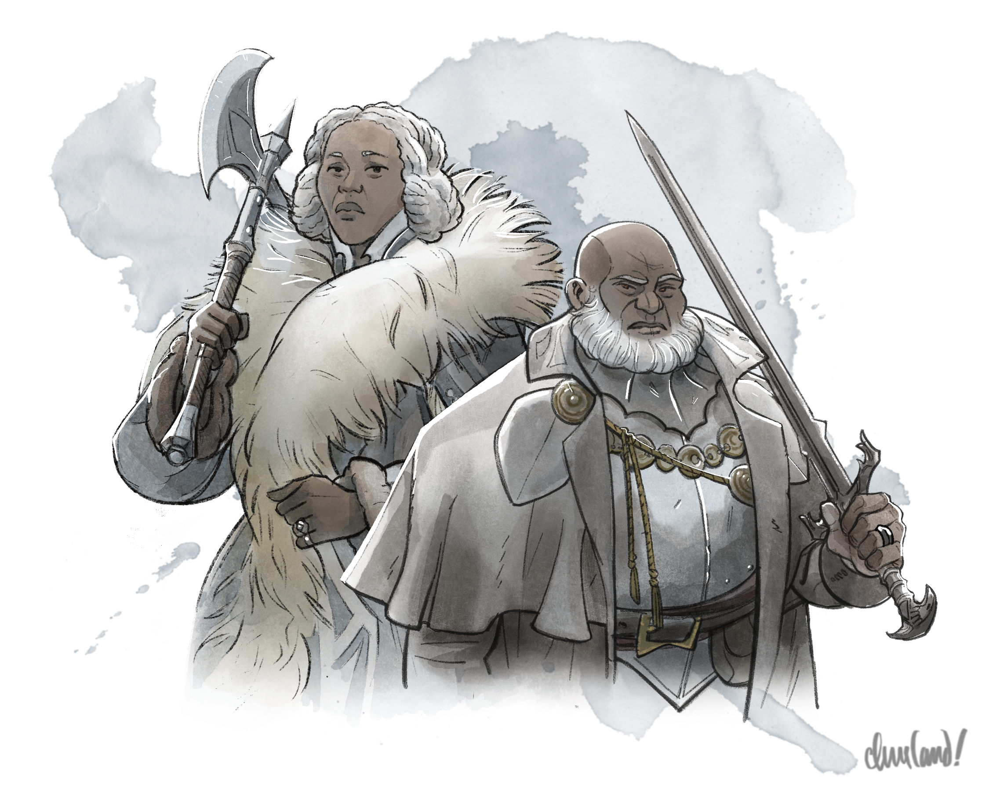
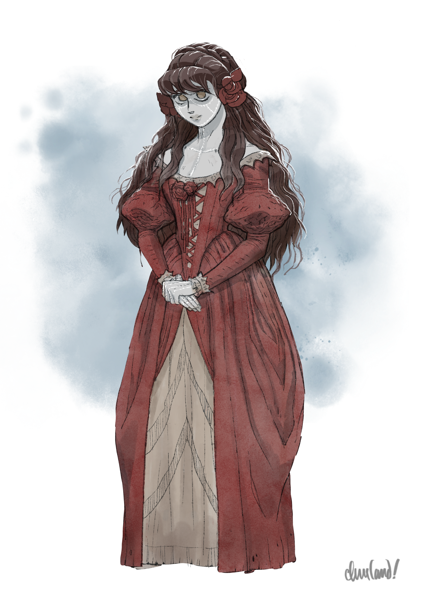
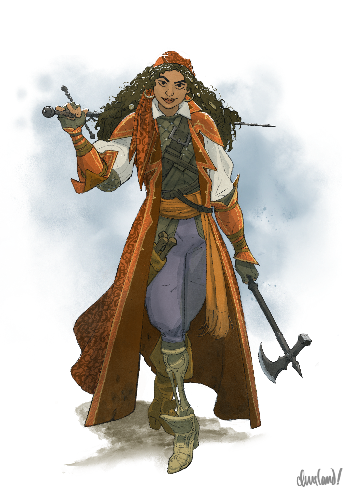

_Uma aventura para cinco personagens de 5º ou 6º nível._
Neste arco, ao conseguirem entrar em Krezk, os jogadores devem subir até a Abadia de Santa Markovia, onde estão destinados a encontrar o aliado profetizado contra Strahd.
Assim que chegarem, o Abade pode oferecer aos jogadores um breve tour pela Abadia e contar sua história, além de informá-los de que a caçadora de monstros vistani Ezmerelda d’Avenir tem sido hóspede da Abadia nos últimos dias.
Se os jogadores chegarem antes da segunda noite após a lua cheia, o Abade os informa de que Ezmerelda está fora e retornará em breve. Se chegarem na segunda noite após a lua cheia ou depois dela, o Abade os conduz até Ezmerelda, que fica feliz em se unir aos esforços deles — sob a condição de que a ajudem a salvar Krezk da loucura do Abade.
K1. A Vila de Krezk
A primeira viagem dos jogadores até Krezk ocorre conforme descrito em Arco I - As Muralhas de Krezk. Contudo, se os jogadores já tiverem concluído Arco J - A Gema Roubada e os Martikov tiverem entregado um carregamento de vinho à vila, o Barão Krezkov já terá ouvido falar dos feitos dos jogadores e os deixará entrar de bom grado. (As famílias Krezkov e Martikov são próximas há muito tempo, desde que um herdeiro do clã Martikov se casou com um membro da família Krezkov e herdou a posse da vinícola Vinícola Feiticeiro dos Vinhos. Se os jogadores ajudaram os Martikov, o Barão Krezkov sente que lhes deve uma dívida de gratidão pessoal.)
Informações de Interpretação. Ressonância. Dmitri deve inspirar conforto por sua confiança serena e sua liderança, compaixão por sua angústia e seu luto após o desaparecimento do filho, e leve irritação por sua teimosia e sua desconfiança habitual em relação a forasteiros.
Emoções. Dmitri costuma se sentir preocupado, melancólico, sombrio, determinado, cauteloso, teimoso ou cortês.
Motivações. Dmitri quer proteger sua vila e manter a família unida.
Inspirações. Ao interpretar Dmitri, canalize Eddard Stark (Game of Thrones), o Rei Théoden (Lord of the Rings) e Stoico, o Imenso (How to Train Your Dragon).
Informações do Personagem Persona. Para o mundo, Dmitri é um líder severo, mas acolhedor. Para aqueles em quem confia, Dmitri é um pai, marido e amigo caloroso e amoroso. Somente Dmitri conhece a extensão de seu luto, de sua angústia e de sua culpa a respeito da maldição da família e do destino de seus filhos e de sua esposa.
Moral. Em um combate, Dmitri agiria apenas para proteger a si mesmo ou aos seus entes queridos, começando por advertir o oponente a recuar e então lutando ferozmente até que o oponente se rendesse ou fosse derrotado.
Relações. Dmitri, um lobisomem secreto, é o marido da Baronesa Anna Krezkova, o irmão da clériga de Mãe Noite e lobisomem Zuleika Toranescu, o pai de Kala e Ilya Krezkov, e o burgomestre da vila de Krezk.
A vila de Krezk é como descrita em S3. Village of Krezk (p. 145). Uma vez que os jogadores estejam dentro das muralhas da vila, o Barão Krezkov fica feliz em compartilhar qualquer uma das informações — ou todas elas — apresentadas em Krezk Lore (p. 146), mas com as seguintes mudanças:
- Os dois únicos filhos de Dmitri são Ilya, de treze anos, e Kala, de oito. Ilya desapareceu recentemente após um ataque de lobisomem.
- O Abade não exige tributo em forma de vinho. Além disso, embora muitos acreditem que o Abade seja Strahd ou um dos servos de Strahd, o falecido avô de Dmitri certa vez falou de um tempo em que o Abade era gentil e compassivo, e cuidava dos doentes e sofredores de Barovia. (Dmitri não tem certeza se acredita nisso ou não.)
Se os jogadores mencionarem seu interesse na Abadia de Santa Markovia, a expressão do Barão Krezkov se torna dura e fria. Ele adverte os jogadores de que o Abade é uma criatura cruel e caprichosa, e ainda lhes conta a história sórdida da Abadia e os rumores estranhos que cercam o Abade.
Se os jogadores tiverem concluído Arco J - A Gema Roubada e estiverem buscando passar a noite em Krezk, o Barão se sente em dívida com eles, dada a longa amizade de sua família com os Martikov, e convida os jogadores a se hospedarem como convidados na casa de sua família.
A família Krezkov guarda um segredo: desde que um lobisomem mordeu o herdeiro dos Krezkov oitenta anos atrás, alguns dos descendentes diretos da família nascem licantropos natos. Como esses descendentes não são fruto da união entre dois lobisomens, nascem sem os benefícios de sua maldição, que só desperta na noite da primeira lua cheia após seu décimo terceiro aniversário.
Hoje, o Barão Dmitri Krezkov é um lobisomem, assim como seu filho de treze anos, Ilya Krezkov. A Baronesa Anna Krezkova, que entrou na família pelo casamento, não compartilha a maldição. A filha de oito anos do casal, Kala Krezkova, é jovem demais para que se saiba se também a carrega. (O Barão Krezkov tem ainda uma irmã mais velha, Zuleika Toranescu, née Krezkova, uma lobisomem que abdicou de sua posição de herdeira para se juntar ao seu amado, o lobisomem Emil Toranescu, como membro da alcateia de lobisomens do Lago Baratok, catorze anos atrás.)
A cada duas semanas, na noite da lua cheia, a Baronesa Krezkova colhe uma flor de acônito às margens da lagoa abençoada de Krezk e prepara uma poção de acônito (potion of wolfsbane), que entrega ao Barão Krezkov para suprimir a agressividade da maldição. Em seguida, ela o acorrenta com grilhões de prata no porão oculto sob a casa, onde ele se transforma em um lobo dócil ao nascer da lua. Até pouco tempo atrás, tanto Ilya quanto Kala ignoravam a verdadeira natureza de sua família, que os pais mantiveram como um segredo cuidadoso tanto da vila quanto dos próprios filhos.
Um mês atrás, enquanto construía o golem de carne Vasilka, o Abade da Abadia de Santa Markovia determinou que sua criação exigia um coração humano vivo, dado de livre e espontânea vontade, para fortalecer sua potência em "assuntos do coração". Após examinar os cemitérios familiares da vila, o Abade descobriu que a Baronesa Krezkova era, na verdade, descendente direta da linhagem Federovna e parente distante de Tatyana Federovna. Ele decidiu que, como descendente de sangue do primeiro amor de Strahd, ela seria portanto a candidata perfeita para completar Vasilka. (O Abade não sabe nada a respeito de Tatyana, exceto que os Vistani lhe disseram que ela era o "único e verdadeiro desejo" dele.)
O Abade, contudo, sabia que a Baronesa jamais lhe entregaria o coração de livre vontade — e assim, tramou um plano sombrio e astuto.
Como um celestial, o Abade era capaz de sentir o cheiro da licantropia no Barão Krezkov e em seu filho, Ilya. Usando sua habilidade mudar de forma, o Abade apareceu a Ilya sob a forma de sua tia há muito ausente, Zuleika.
"Zuleika" revelou a Ilya que ele e a linhagem de seu pai eram lobisomens — criaturas incompreendidas, outrora temidas e respeitadas como inimigas de Strahd. Ela alegou, no entanto, que Strahd havia corrompido a linhagem deles ao convencer seus ancestrais a se envenenarem com acônito e prata, eliminando assim alguns de seus mais poderosos adversários.
"Zuleika" contou a Ilya que havia abandonado Krezk porque se recusava a aceitar o veneno da família, temendo que Strahd pudesse um dia se erguer novamente. Disse a Ilya que ele compartilhava o sangue de grandes guerreiros e que, ao abraçar sua maldição, poderia proteger sua família e seus vizinhos na calamidade do despertar de Strahd.
Para tanto, disse "Zuleika", ele deveria fingir beber a poção que sua mãe lhe oferecia na noite da lua cheia e, em segredo, descartar o conteúdo para enganá-la. Ela o advertiu a não contar a ninguém sobre a conversa — e especialmente não aos pais.
Ilya, incapaz de acreditar que ele ou seus pais fossem lobisomens, rejeitou a história de “Zuleika" com raiva e descrença. Mas quando, alguns dias depois, seus pais lhe contaram de sua herança licantrópica, seu mundo se despedaçou — e as palavras do Abade preencheram o vazio que ficou em seu lugar.
Na noite da lua cheia, Ilya enganou a mãe, fazendo-a crer que havia bebido a poção de acônito, mas secretamente a derramou na terra da horta da família. Naquela noite, ele se transformou em um lobisomem temível e agressivo, destruindo suas amarras e desencadeando uma carnificina pela vila — matando sua irmã mais nova, Kala, no processo. À meia-noite, Ilya havia desaparecido da vila, fugindo das armas dos aldeões e escalando as muralhas para escapar para dentro da Svalich Wood.
Na manhã seguinte, os mensageiros do Abade — Otto e Zygfrek Belview — procuraram os enlutados Krezkov e os convidaram a uma audiência na Abadia. Ali, o Abade prometeu restaurar a vida de Kala — sob a condição de que a Baronesa oferecesse o próprio coração ao Abade em troca. O Barão Krezkov, horrorizado, assistiu impotente enquanto sua esposa aceitava de bom grado a oferta do Abade.
O Abade ressuscitou Kala imediatamente, como sinal de boa-fé. Então, num gesto de misericórdia, concedeu à Baronesa um mês para se despedir antes de retornar à Abadia e entregar seu coração. Caso ela não retornasse, advertiu, ele viria pessoalmente cobrá-lo — e a vila inteira pagaria o preço.
K1a. A Casa dos Krezkov
Quando os jogadores se aproximarem da casa dos Krezkov, leia:
A casa diante de vocês é a maior construção que viram dentro da vila, mas ainda assim modesta em seu desenho. Suas paredes externas são feitas de robustos troncos de pinheiro, desgastados pelo tempo, porém bem conservados. Um telhado espesso de sapê inclina-se suavemente acima, coroado por uma chaminé de pedra da qual um fino fio de fumaça se ergue no ar. As janelas são pequenas, mas adornadas com singelas cortinas de renda, oferecendo um vislumbre de um interior mais acolhedor.
Ali perto, uma área cercada revela uma pequena horta, a terra recém-revolvida e cultivando uma variedade de ervas e legumes. De um dos lados da casa, uma trilha estreita leva a um pequeno cemitério familiar, cujas lápides lançam longas sombras sob a luz cinzenta.
A porta da frente da casa dá para o vestíbulo.
Vestíbulo
Quando os jogadores atravessarem a porta da frente da casa, leia:
A pesada porta de madeira range ao se abrir, revelando um vestíbulo com um tapete gasto sob os pés. O aroma da madeira de pinho se mistura ao cheiro terroso das achas queimando em uma lareira próxima, e uma simples mesa de madeira repousa ao lado da porta, sustentando uma tigela cheia de pequenas bugigangas.
Uma tábua entalhada à mão, fixada à parede, sustenta dois casacos pendurados — um de tamanho adulto e um de criança pequena — com dois pares de botas pendurados sob os casacos. Dois pinos vazios se projetam da tábua ao lado deles.
Ao entrarem, o Barão Krezkov — que insiste para que os jogadores o chamem de Dmitri enquanto forem hóspedes em sua casa — pendura o casaco em um dos pinos da parede e tira as botas. Em seguida, chama sua esposa, a Baronesa Anna Krezkova, que sai da cozinha para cumprimentar os jogadores calorosamente.

"Anna and Dmitri Krezkov" por Caleb Cleveland. Apoie-o no Patreon!Informações de Interpretação Ressonância. Anna deve inspirar gratidão e conforto com sua bondade e hospitalidade, leve irritação com sua postura direta e sem rodeios, e (quando os jogadores descobrirem) compaixão e ternura por sua promessa ao Abade.
Emoções. Anna costuma se sentir compassiva, preocupada, determinada, cética, pensativa, pesarosa ou melancólica.
Motivações. Anna quer ajudar Dmitri a liderar e amparar o povo de Krezk, manter seus filhos seguros e felizes, e ver Ilya de volta a Krezk em segurança.
Inspirações. Ao interpretar Anna, canalize Catelyn Stark (_Game of Thrones_), Molly Weasley (_Harry Potter_) e Joyce Byers (_Stranger Things_).
Informações do Personagem Persona. Para o mundo, Anna é uma líder compassiva e de vontade firme, dedicada à segurança de Krezk. Para aqueles em quem confia, é uma mulher afetuosa que se resignou ao acordo com o Abade — e que se entristece ao pensar em seus filhos crescendo sem mãe.
Moral. Em um combate, Anna empunharia seu machado de batalha e ordenaria que os oponentes largassem as armas, mas não hesitaria em lutar para defender a si mesma, sua família ou seus vizinhos.
Relações. Anna é a esposa do Barão Dmitri Krezkov, mãe de Ilya e Kala Krezkov, e cunhada da lobisomem Zuleika Toranescu. Em troca da ressurreição de Kala, Anna também prometeu permitir que o Abade lhe arranque o coração do peito.
Se os jogadores pretenderem passar a noite, Anna pede que a ajudem a concluir uma série de tarefas antes do jantar: alimentar as galinhas, limpar o chiqueiro, capinar a horta e (o mais importante) obter um balde de leite da vaca de Kretyana Dolvof — uma viúva cuja casa fica logo a sudoeste da lagoa de água doce da vila. Anna também acolhe de bom grado a ajuda dos jogadores na cozinha enquanto ela prepara a refeição da noite.
Embora a casa dos Krezkov não tenha muito espaço, os jogadores podem deixar suas mochilas e sacos de dormir nos currais e no único quarto vazio da construção (veja O Quarto de Ilya abaixo).
Currais
Atrás de uma divisória, nos fundos da casa, ficam os currais. Quando os jogadores entrarem nessa área, leia:
Os grunhidos dos porcos e o cacarejar das galinhas preenchem esta área. Palha cobre o chão, e cercas de madeira separam um par de baias, que ficam ao lado de um trio de grandes galinheiros. Algumas lanternas pendem do teto, oferecendo luz fraca, e uma pesada porta de estilo celeiro leva ao pátio adiante.
Cozinha
Quando os jogadores entrarem nessa área, leia:
Uma grande mesa de madeira ocupa o centro, cercada de cadeiras e coberta por uma simples toalha xadrez. Panelas e frigideiras de cobre pendem de ganchos acima de uma lareira de pedra, e uma variedade de ervas seca em um suporte de madeira na parede. Uma janela aberta deixa entrar uma brisa fresca, e um pequeno monte de alpiste repousa sobre o peitoril.
Se os jogadores se demorarem aqui, notam que um odor mofado e acre emana de um pilão e almofariz sobre uma das prateleiras mais altas. Se recuperado, o almofariz contém um leve pó moído de um tom vibrante de roxo, identificável como acônito com um teste de Inteligência (Natureza) CD 13.
Em algum momento antes do jantar, Dmitri e Anna se encontram na cozinha para uma conversa reservada, pedindo a quaisquer jogadores presentes que se retirem do cômodo por um momento de privacidade. Um jogador que escute a conversa às escondidas vê o seguinte:
Um pequeno pintarroxo desce até o peitoril da janela, bicando silenciosamente o alpiste, enquanto Dmitri e Anna se aproximam um do outro e começam a falar em voz baixa.
O pintarroxo é o Abade disfarçado.
Um jogador pode fazer um teste de Sabedoria (Percepção) CD 14 para tentar escutar a conversa. Se for bem-sucedido, ouve o seguinte:
“Eu sei que você disse que já tinha se decidido," murmura Dmitri. “Mas por favor, Anna — você precisa reconsiderar."
“Dmitri—" começa Anna.
Dmitri segura as mãos dela, a voz tensa e desesperada. “Gargosh, Ivan e Falkon vão nos ajudar. Eles não vão fazer perguntas; sabem como é perigoso viajar pelas estradas. Ivan pode nos emprestar as mulas dele — podemos construir uma vida nova para você em Vallaki."
Anna afasta as mãos com um puxão. “Não," ela sussurra. “Eu fiz minha escolha — por Kala e pelo nosso povo. Como ousa me pedir que fuja como uma covarde?"
Dmitri se encolhe e então, por reflexo, olha por cima do ombro para se certificar de que ninguém está ouvindo. Um jogador precisa ser bem-sucedido em um teste de Destreza (Furtividade) CD 16 para permanecer despercebido; do contrário, Dmitri o ouve e o fareja graças à sua característica audição e olfato aguçados. (Dmitri pergunta secamente ao jogador se ele estava escutando às escondidas e, se ele admitir, manda-o esquecer o que ouviu e não contar a ninguém.)
Se o jogador que escutava escapar da detecção, leia:
Dmitri fecha os olhos e engole em seco. “Me desculpe," ele diz. “Eu só não quero perder você. Com Ilya desaparecido, e Kala sofrendo tanto . . ." Vocês ouvem o som de um soluço meio contido. “Eu não consigo fazer isso sozinho. Eu não consigo fazer isso sem você."
Anna o abraça. “Nós vamos dar um jeito nisso," ela sussurra. “Sempre damos."
O pintarroxo no peitoril alça voo pouco depois.
Horta
Quando os jogadores entrarem nessa área, leia:
Fileiras de legumes — repolhos, cenouras e nabos resistentes — crescem em canteiros bem organizados, suas folhas de um verde vibrante contra a terra escura e revolvida. Uma cerca de madeira delimita a horta, seus mourões adornados com talismãs simples — penas, pedrinhas e pedaços de barbante — que balançam suavemente à brisa.
Um pequeno e solitário cemitério repousa à sombra da casa, logo além da cerca.
Se os jogadores entrarem na horta durante o dia, acrescente:
Uma menina está sentada sobre uma pedra no cemitério, encarando algo fora do campo de visão de vocês.
A menina é Kala Krezkova. Ela não responde se os jogadores a chamarem.
Cemitério
Quando os jogadores entrarem nessa área, leia:
Lápides, algumas desgastadas pelo tempo e outras recém-esculpidas, marcam o repouso da família Krezkov neste pequeno cemitério salpicado de neve. Uma pequena cova, recém-aberta mas vazia, destaca-se das demais.
Se os jogadores entrarem no cemitério durante o dia, acrescente:
Uma menina de cabelos escuros está sentada sobre uma pedra ali perto, as mãos abraçando os joelhos contra o peito enquanto encara silenciosamente uma pequena cova. Ela veste uma túnica fina e está descalça, seu corpo miúdo tão imóvel que quase parece uma estátua.
 "Kala Krezkova" por Caleb Cleveland. Apoie-o no Patreon!
"Kala Krezkova" por Caleb Cleveland. Apoie-o no Patreon!
A menina é Kala Krezkova. Ela não responde de imediato se os jogadores falarem com ela. Se os jogadores se aproximarem, porém, ela pergunta bruscamente: "Vocês já tiveram um pesadelo do qual não conseguiam acordar?"
Se os jogadores responderem à pergunta com sensibilidade e compaixão, ela pergunta: "Se uma coisa ruim aconteceu, mas depois passou, é como se nunca tivesse acontecido?"
Se os jogadores novamente responderem com sensibilidade e compaixão, Kala os olha nos olhos e sussurra: "Eu acho que pesadelos nunca vão embora de verdade." Apesar da pouca idade, seus olhos parecem assombrados e exaustos.
A Baronesa Anna Krezkova chega pouco depois e exclama: “Aí está você, Kala! Você não pode sair sem casaco ou botas; vai pegar um resfriado." Então ela pega Kala no colo e a leva para dentro. (Se questionada, Anna se desculpa sem jeito pelos pensamentos macabros de Kala e alega que a menina está assim desde que “adoeceu" alguns dias atrás. Um teste de Sabedoria (Medicina) CD 12 bem-sucedido indica que Kala não apresenta doença alguma, enquanto um teste de Sabedoria (Intuição) CD 12 bem-sucedido indica que Anna não está contando toda a verdade. Anna se recusa a dar detalhes e insiste em sua versão se for confrontada.)
Sala de Jantar e Sala de Estar
A sala de jantar divide o mesmo espaço com a sala de estar, sem parede alguma entre elas. Quando os jogadores entrarem nessa área, leia:
Este amplo cômodo está dividido em duas metades: uma sala de jantar e uma sala de estar. Na sala de jantar, paredes de pinho envelhecido absorvem suavemente a luz trêmula de um lustre de ferro forjado pendurado no alto, cujas velas lançam um brilho aconchegante. Um aparador encostado em uma das paredes exibe uma variedade de louças de cerâmica e utensílios de madeira, além de alguns potes de barro que talvez contenham conservas ou temperos. O centro do cômodo é dominado por uma mesa de carvalho maciço, com as laterais entalhadas em padrões de folhas da floresta enroladas em torno de crescentes, círculos e formas oblongas. Seis cadeiras de madeira entalhadas à mão cercam a mesa.
Uma lareira de pedra domina a parede do lado oposto do aposento, crepitando baixinho enquanto banha o espaço em um brilho quente e trêmulo. Algumas cadeiras bem gastas e um sofá se aconchegam em torno de uma mesa de centro baixa de madeira ali perto, e prateleiras ao longo das paredes guardam um sortimento de livros, retratos de família e pequenas esculturas de madeira entalhadas a canivete.
Uma inspeção atenta dos padrões da mesa revela que eles representam as fases da lua. As esculturas entalhadas retratam um sortimento de pequenos lobos e corvos de madeira, além de um sol e uma lua esculpidos.
O jantar consiste em borscht (sopa quente de beterraba com cenoura e batata), pão de centeio de casca crocante com manteiga e leite temperado com noz-moscada (comprado de uma caravana Vistani). Se não houver cadeiras suficientes para que os Krezkov e os jogadores se sentem todos à mesa, os jogadores restantes podem fazer suas refeições na sala de estar.
No meio do jantar, batem à porta. Quando Anna vai atender, uma mulher com a voz e a aparência de Kretyana Dolvof a cumprimenta. Quando Anna retribui o cumprimento, com uma pontinha de surpresa, e pergunta o que a traz ali, leia:
Num instante, a figura de uma senhora idosa está diante de vocês. No instante seguinte, sem qualquer sombra de transição ou espetáculo, ela desaparece — e em seu lugar está um belo rapaz em um hábito monástico marrom, um símbolo de madeira pintado retratando o sol pendurado por uma corrente em seu pescoço. Ele se porta com uma graça atemporal, e seus olhos carregam uma serenidade silenciosa e fria.
Este é o Abade. Anna e Dmitri reagem à sua aparição com choque, e um jogador com valor de Sabedoria (Intuição) passiva 13 ou mais nota que ambos parecem aterrorizados. Em voz baixa, Dmitri ordena que Kala vá para o quarto — uma ordem que ela obedece em silêncio.
O Abade cumprimenta Dmitri, Anna e os jogadores com cordialidade, e observa com leve interesse que os Krezkov estão recebendo hóspedes.
Dmitri pergunta, nervoso, o motivo da visita do Abade. Em resposta, enquanto se aproxima das prateleiras acima da lareira para examinar as estatuetas entalhadas ali, o Abade pergunta se é pecado visitar o lar de seus amigos e vizinhos — "sobretudo," ele observa, com um olhar de relance para Anna, “amigos e vizinhos que em breve podem ser família?"
Conforme a conversa avança, o Abade faz aos jogadores as seguintes perguntas — aparentemente para saber o que pensam de Krezk, mas na verdade destinadas a transmitir aos Krezkov um aviso sinistro sobre as consequências da traição:
- "O que acharam da vila? Um povoado pitoresco e tranquilo, não?" (A vila está segura e tranquila — por ora.)
- "As crianças de Krezk sempre me pareceram saudáveis e bem protegidas. Os Krezkov têm sido bons guardiões desta terra, não têm?" (Fui eu quem devolveu a saúde à sua filha. Ela e seus vizinhos manterão suas vidas e seu sustento — se vocês cumprirem sua parte no nosso acordo.)
- "Vejo por suas armas que não são estranhos aos perigos que existem além destas muralhas. É bom que a boa gente de Krezk esteja protegida, não é, das ameaças que espreitam lá fora?" (As poderosas muralhas de Krezk não os protegerão da minha ira.)
- "Não é belo como uma coisa tão pequena e frágil consegue existir nos confins do domínio de Strahd?" (Vocês existem porque eu permito — e deixarão de existir se eu assim exigir.)
Se lhe perguntarem por que os Krezkov parecem ter medo dele, o Abade insiste que eles não têm nada a temer. “Não há medo em cumprir o próprio dever," diz ele serenamente, “nem vergonha ou pecado em aceitar o próprio destino. Como o sol, a lua e as estrelas, todos temos nosso papel a cumprir, e o deles é abençoado." (O Abade não revela qual é o “dever" dos Krezkov, insistindo que a relação de cada um com os deuses é assunto privado, a ser compartilhado apenas por escolha própria. Se questionados, os Krezkov parecem paralisados de medo, e Dmitri apenas balança a cabeça em vez de responder.)
Se for interpelado outra vez, o Abade parece brevemente abalado e acrescenta com tristeza, enquanto examina a figurinha entalhada de um lobo sobre o consolo da lareira: “É verdade que muitos instrumentos dos deuses primeiro rejeitaram seu chamado. Mas não está escrito que aqueles que se recusam a servir ao divino se tornam ferramentas do divino, enquanto aqueles que servem ao divino tornam-se eles próprios divinos?" E murmura, pesaroso: “A escolha, receio, nunca é fácil."
A menos que seja impedido, o Abade inclina a cabeça respeitosamente para Dmitri e Anna, pede desculpas por ter perturbado a refeição deles e lhes deseja boa noite. "Espero que reflitam sobre minhas palavras esta noite," diz ele, curvando-se profundamente. “Que a luz do Senhor da Manhã os acompanhe." Em seguida, deixa a casa. Leia:
Pela porta da frente da casa, sob a neve que cai fresca, a silhueta silenciosa do jovem se ergue moldada em um halo de luar escuro. Então, num piscar de olhos, o homem simplesmente deixa de existir; em seu lugar, uma águia mais alta que um homem pousa sobre a terra, suas penas mesclando-se perfeitamente aos flocos de neve que caem. Com uma poderosa batida de asas, a criatura ascende, planando rumo ao céu noturno até sumir nas profundezas da escuridão barovia.
Dmitri e Anna então desabam de joelhos, abraçados um ao outro e chorando baixinho. Se forem confortados, podem compartilhar as seguintes informações:
- Recentemente, um lobisomem atacou a vila de Krezk, conseguindo de algum modo transpor suas muralhas. Em sua carnificina, feriu muitos e matou Kala. (“Eu a segurei nos braços enquanto ela morria," soluça Dmitri. “Metade do lado dela estava faltando. Ela ficava sussurrando ‘Papai’ e ‘Mamãe’, sem parar, até que finalmente ficou imóvel.")
- Ilya, o filho dos Krezkov, sumiu em meio ao caos e não é visto há dias. (Se os jogadores localizaram Ilya em Arco I - As Muralhas de Krezk, Dmitri acrescenta que, até pouco tempo atrás, temiam que ele também estivesse morto.)
- Os Krezkov rezaram ao Senhor da Manhã por orientação e salvação, implorando por misericórdia e redenção — e o Abade respondeu.
- Na manhã seguinte, os servos bestiais do Abade — um par de criaturas que se diziam chamar Otto e Zygfrek — convidaram os enlutados Krezkov à Abadia. Ali, o Abade ofereceu um acordo, prometendo ressuscitar Kala com plena saúde se Anna prometesse sacrificar seu coração à criação profana do Abade: o golem de carne que ele chama de Vasilka. Para horror de Dmitri, Anna aceitou — e o Abade trouxe Kala de volta à vida.
- O Abade concedeu a Anna o prazo de um mês para fazer as pazes com a família e os vizinhos — um gesto que ele chamou de “a misericórdia do Senhor da Manhã". Os Krezkov não têm muito tempo restante. (O prazo do Abade expira duas semanas e um dia após a primeira lua cheia dos jogadores em Vallaki.)
- Kala não é mais a mesma desde a ressurreição. Dmitri e Anna não perguntaram, mas estão apavorados com a possibilidade de que ela se lembre da experiência de morrer — e de que o que viu além do véu da mortalidade a tenha marcado para sempre. A vida e o riso se apagaram nela, e ela passa boa parte do tempo encarando a cova que seus pais um dia prepararam para ela.
O Quarto de Kala
Se os jogadores entrarem nessa área, leia:
Uma cama pequena repousa contra uma das paredes deste quarto pequeno e discreto, sua colcha um mosaico de padrões florais e tons pastéis desbotados. Uma prateleira acima de uma cômoda próxima exibe alguns brinquedos simples: um urso de pelúcia com olhos de botão, um cavalinho entalhado em madeira e um pequeno livro esfarrapado de contos populares barovianos. No peitoril da janela repousa um pequeno vaso de cerâmica com uma flor murcha, suas pétalas pendendo sob a luz sombria.
Se Kala tiver sido mandada para o quarto, ela pode ser encontrada aqui, sentada na cama com os joelhos abraçados contra o peito, encarando a flor murcha no peitoril.
Se um jogador falar com gentileza com Kala, ela pergunta se ele já viu um “monstro" antes. Em seguida, pergunta: “Por que os monstros gostam tanto do escuro?"
Conforme a conversa avança, Kala hesita e então pergunta ao jogador se ele a ajudará. Se o jogador concordar, ela insiste que ele mantenha o pedido em segredo dos pais dela, “porque eu não quero deixar eles tristes." Se o jogador concordar de novo, ela pode compartilhar as seguintes informações:
- Seus pais não querem contar a ela, mas ela acha que morreu — e que o Abade teve algo a ver com sua volta. Ela não se lembra exatamente do que aconteceu: apenas um clarão de dentes e garras, e sangue e dor.
- Kala então se lembra de estar em um lugar escuro, cheio de névoa e gritos distantes. “Eu sentia que era pra eu ir a algum lugar," ela murmura, “mas a névoa me impedia. Toda vez que eu tentava sair, ela me trazia de volta pros gritos e pro escuro."
- Por fim, ela despertou de novo dentro do próprio corpo — curada e inteira, sem mais nenhuma dor. Seus pais a levaram para casa e a cobriram de amor e cuidado, mas Kala percebia que eles estavam nervosos e assustados, como se um passo em falso pudesse quebrá-la.
Kala tem pesadelos desde a ressurreição — sonhos com o monstro que a matou e com o lugar escuro para onde foi quando morreu. Ela acredita que enfrentar o monstro fará os pesadelos cessarem.
Kala conta ao jogador que havia escapulido para brincar na horta na noite em que morreu — e que o monstro veio da adega de vinhos sob a casa. Ela pede ao jogador que espere até seus pais adormecerem, depois a leve até lá e a mantenha em segurança, para que ela possa ver o monstro com os próprios olhos ou confirmar que ele foi embora para sempre.
Se o jogador tentar dissuadir Kala de descer até a adega, ela responde: "Eu preciso ver com meus próprios olhos. Eu não quero mais ter medo do escuro."
O Quarto de Ilya
Quando os jogadores entrarem nessa área, leia:
A cama deste quarto modesto está arrumada com esmero, coberta por uma colcha costurada à mão. Uma prateleira de madeira acima da escrivaninha guarda um sortimento de curiosidades — uma pena, um pequeno cristal de rocha e o que parece ser um dente de lobo. Um pequeno suporte de armas está pendurado na parede, sustentando no momento uma espada curta e um arco de caça, com uma aljava de flechas logo abaixo. Uma janela redonda com singelas cortinas de renda deixa entrar uma nesga de luz natural, iluminando um mapa desenhado à mão pregado na parede ao lado dela.
O mapa retrata os bosques ao redor de Krezk, estendendo-se ao sul até a Vinícola Feiticeiro dos Vinhos e a leste até o Lago Baratok. (Não inclui o covil dos lobisomens nem a torre do Lago Baratok.)
Um jogador que inspecionar o mapa percebe um pequeno pedaço de pergaminho escondido atrás dele. Se retirado, o pergaminho traz o esboço a carvão de uma mulher, descrito assim:
O esboço retrata uma mulher de olhos estreitos e fundos, cujos lábios parecem se curvar inconscientemente em um rosnado. Uma bandana cinza prende para trás um conjunto de dreadlocks grossos e curtos, e uma túnica preta meio esfarrapada aparece sob uma armadura de couro gasta sobre seu peito.
A mulher é Zuleika Toranescu, a irmã mais velha de Dmitri. Um jogador com valor de Sabedoria (Percepção) passiva 13 ou mais nota que ela guarda uma semelhança impressionante com o Burgomestre Dmitri Krezkov.
 "Sketch of Zuleika" por Caleb Cleveland. Apoie-o no Patreon!
"Sketch of Zuleika" por Caleb Cleveland. Apoie-o no Patreon!
Se lhe mostrarem o desenho, o rosto de Dmitri empalidece, e ele pergunta ao jogador onde o encontrou. Se lhe disserem que foi no quarto de Ilya, ele insiste que é impossível. “Esse é um desenho da minha irmã mais velha, Zuleika," diz ele com a voz rouca, “e ela não é vista em Krezk há quase treze anos." (Se perguntarem por que Zuleika partiu, Dmitri conta apenas que ela teve uma briga com ele e com o pai adoentado dos dois sobre questões pessoais de família, e que ele não a viu nem teve notícias dela desde que partiu.)
Adega de Vinhos
Uma pesada porta de madeira em rampa se apoia contra a casa, do lado que dá para a horta. Uma inspeção atenta revela que duas de suas dobradiças estão quebradas, e que a fechadura está amassada e arrebentada. O centro da porta se projeta ligeiramente para fora, como se tivesse sido golpeado por dentro com grande força.
A porta se abre para um lance de escadas de pedra que desce até a adega de vinhos. Quando os jogadores entrarem nesse aposento, leia:
O aposento é gelado, e as paredes estão forradas de prateleiras de madeira vazias que um dia guardaram garrafas de vinho. O cheiro de terra úmida é onipresente.
O chão traz um rastro de sulcos profundos e marcas de garras. As marcas levam a um trecho vazio entre duas prateleiras de madeira, cobrindo uma porção da parede de pedra ao fundo com cerca de noventa centímetros de largura.
Um teste de Sabedoria (Natureza) CD 12 revela que as marcas e os sulcos foram deixados por uma grande besta lupina.
O trecho vazio na parede esconde uma porta secreta. Nenhum teste é necessário para avistá-la, pois ela não pode ser fechada por completo devido aos estragos causados por Ilya, deixando uma fresta fina na parede que vai do chão até um ponto a um metro e oitenta acima do solo.
Um jogador pode forçar a porta secreta a abrir com um teste de Força CD 20 bem-sucedido. Como alternativa, o jogador pode encontrar o mecanismo que destranca a porta — uma alavanca disfarçada na prateleira de vinhos — com um teste de Inteligência (Investigação) CD 15 bem-sucedido, obtendo êxito automático após 1 minuto inteiro de busca. Uma vez acionada a alavanca, a tranca da porta se solta e a porta desliza ligeiramente para frente, revelando reentrâncias em sua lateral que podem ser usadas para abri-la por completo.
A porta secreta leva ao porão oculto (veja abaixo).
Porão Oculto
Esta área não tem iluminação. Quando os jogadores entrarem nela pela primeira vez, leia:
O ar aqui é denso e mofado. Três conjuntos de pesados grilhões de prata estão fixados às paredes de pedra, dois deles cercados por meias-luas de sal desfeitas. Marcas de garras estragam as paredes e o chão, e os grilhões de prata fixados à parede leste foram gravemente danificados: um deles arrebentado, o outro arrancado inteiro da parede.
Se os jogadores não tiverem tomado medidas especiais para impedir ou vigiar a aparição dos Krezkov, Dmitri e Anna percebem que Kala não está no quarto, saem para a horta e descem as escadas da adega ao notarem as pegadas dos jogadores na neve, encontrando-os diante da porta do porão oculto.
“Tenho certeza de que vocês têm perguntas," diz Dmitri, em voz baixa, ao chegar. Seus olhos estão assombrados e tristes, e seu olhar demora-se, sombrio, no rosto de Kala. “Peço apenas que não nos julguem com dureza demais quando ouvirem as respostas."
Dmitri pode compartilhar as seguintes informações, se lhe perguntarem:
- Oitenta anos atrás, seu avô foi mordido por um lobisomem. Seu ancestral sobreviveu, mas a maldição da licantropia permaneceu com ele até a morte — e foi transmitida, de modo intermitente, dentro da linhagem Krezkov. A maldição desperta na primeira lua cheia após o décimo terceiro aniversário de um Krezkov infectado, transformando seu corpo em uma besta poderosa e violenta naquela noite e em cada lua cheia seguinte.
- Desde então, a família Krezkov mantém a maldição sob controle prendendo-se em prata nas noites de lua cheia e bebendo uma poção de acônito, que mantém o espírito do lobo dócil e calmo.
- Dmitri nasceu lobisomem. Quando Ilya nasceu, seus pais esperavam que ele escapasse da maldição — mas, à medida que a noite de sua primeira lua cheia se aproximava, os sinais de licantropia se tornaram impossíveis de ignorar. (Os sinais de licantropia, Anna pode contar, incluem acessos súbitos e atípicos de inquietação e agressividade, audição e olfato aguçados, um tom âmbar nas íris e um apetite notavelmente maior nas proximidades da lua cheia.)
- Anna preparou para Ilya uma poção de acônito e ajudou a prendê-lo aos grilhões da parede, ao lado do pai. De algum modo, porém, quando Ilya se transformou pela primeira vez, a poção falhou em suprimir a fúria ou a força do lobo dentro dele. Ilya rompeu os grilhões, escapou da adega e provocou uma carnificina pela vila — não antes, porém, de ferir vários aldeões e matar sua irmã, Kala.
- Ilya então fugiu por cima das muralhas e sumiu na Svalich Woods. Apesar de terem organizado várias buscas nas semanas desde seu desaparecimento, Dmitri e Anna não encontraram sinal algum dele.
Dmitri pede desculpas aos jogadores por ter escondido essas informações deles, e diz que compreende se eles estiverem assustados ou transtornados.
Os Krezkov, orgulhosos e autossuficientes, jamais sonhariam em pedir aos jogadores que encontrassem Ilya ou detivessem o Abade por eles. Se os jogadores se oferecerem para tanto, contudo, os Krezkov ficam humildemente comovidos até as lágrimas de gratidão, embora se desculpem por não ter muito a oferecer em agradecimento. (Mesmo que os jogadores não se ofereçam, Ezmerelda d'Avenir os recrutará para salvar Ilya e derrotar o Abade depois que a encontrarem em K2c. A Ala Leste.)
Os Krezkov também contam com uma ajuda adicional para localizar Ilya: Ezmerelda d’Avenir, uma caçadora de monstros e amiga da família, tem percorrido a Svalich Woods nos últimos dias em busca dele. (Veja A Visita de Ezmerelda, abaixo, para mais informações.)
Cinco anos atrás, pouco depois de ela e o Dr. Rudolph van Richten seguirem caminhos separados, Ezmerelda d’Avenir foi gravemente ferida em um ataque de lobisomem nos bosques ocidentais de Barovia, perdendo a perna direita da altura do joelho para baixo para as mandíbulas de Kiril Stoyanovich — o lobisomem que hoje lidera a alcateia baroviana.
Dmitri e Anna, atravessando os bosques com uma partida de caça, espantaram Kiril e encontraram Ezmerelda inconsciente e à beira da morte entre as árvores. Levaram-na de volta a Krezk e cuidaram dela até que se restabelecesse. Conforme recuperava as forças, Ezmerelda entretinha Anna e o jovem Ilya Krezkov com histórias de suas aventuras nas terras além das brumas, enchendo a cabeça de Ilya com sonhos de caçar monstros como ela.
Quando o ferimento de Ezmerelda cicatrizou por completo, Anna e um grupo de três krezkianos a escoltaram até a vizinha Vallaki, onde Ezmerelda encomendou sua perna protética ao fabricante de brinquedos Gadof Blinsky. (Embora os éditos do Barão Vallakovich proibissem a entrada de Vistani dentro das muralhas da cidade, a vontade de aço e os modos diplomáticos da Baronesa Krezkova bastaram para contornar quaisquer restrições desse tipo.) Ezmerelda agradeceu profundamente aos Krezkov por sua bondade, e jurou ajudá-los e protegê-los caso um dia precisassem.
Quando Ezmerelda voltou a Barovia em busca do Dr. Van Richten, procurou abrigo com a família Krezkov mais uma vez — e ficou sabendo do destino de Ilya e do acordo de Anna. Tomada de fúria justa, Ezmerelda jurou trazer Ilya para casa, além de encontrar um meio de dissuadir o Abade de cobrar seu pagamento. Desde então, ela passa a maior parte de seus dias e noites rondando a Svalich Wood local em busca de sinais de Ilya e — se os jogadores concluíram Arco I - As Muralhas de Krezk — do covil dos lobisomens que o levaram, usando sua carroça como base móvel perto das margens do Lago Baratok.
Ezmerelda, uma clarividente menor, também percebeu que os espíritos dentro da Abadia estão perturbados e inquietos. Embora ainda não tenha tido oportunidade de fazê-lo, ela planeja conduzir uma sessão espírita ao retornar da Svalich Wood, na esperança de contatar um espírito com mais informações sobre o Abade e seus planos.
K2. A Abadia de Santa Markovia
A estrada até a Abadia de Santa Markovia é como descrita em S5. Winding Road (p. 147).
K2a. Entrando na Abadia
O portão da Abadia e seus ocupantes são como descritos em S6. The North Gate (p. 147). Antes de escoltar os jogadores para dentro da Abadia, Otto e Zygfrek exigem saber por que eles vieram.
Informações de Interpretação Ressonância. Otto e Zygfrek devem fazer os jogadores se divertirem com suas palhaçadas, excentricidades e discussões, se sentirem desconfortáveis com a falta de noção de espaço pessoal de Otto e a franqueza brutal de Zygfrek, sentirem compaixão pelo desconforto de Zygfrek com a própria aparência e voz, se afeiçoarem à positividade sem limites de Otto e se irritarem levemente com a grosseria de Zygfrek.
Emoções. Otto costuma se sentir curioso, empolgado, irritado ou satisfeito. Zygfrek costuma se sentir irritada, desconfiada, ofendida, melancólica ou pensativa.
Motivações. Otto é motivado principalmente por seu desejo de comida e atenção. Zygfrek é motivada principalmente por sua amargura e seu ódio de si mesma. Ambos são movidos pela lealdade ao Abade e pelo desejo da "perfeição" prometida por ele.
Inspirações. Ao interpretar Otto, canalize Dobby (Harry Potter), Gollum (Lord of the Rings), Jar-Jar Binks (Star Wars) e Pinky (Pinky and the Brain). Ao interpretar Zygfrek, canalize Lula Molusco (Spongebob SquarePants), Marvin, o Androide Paranoico (The Hitchhiker's Guide to the Galaxy), e Oscar, o Rabugento (Sesame Street).
Informações do Personagem Persona. Para o mundo, Otto é um tagarela escandaloso e entusiasmado demais, fascinado por coisas interessantes, enquanto Zygfrek é uma cínica taciturna e mal-humorada que sempre acha algo para insultar ou de que reclamar. Para aqueles em quem confia, Zygfrek é uma mulher quieta, melancólica e cheia de ódio por si mesma, que anseia desesperadamente pela "perfeição" que o Abade promete.
Moral. Se atacado, Otto declararia galantemente sua intenção de lutar e em seguida recuaria de imediato, enquanto Zygfrek exigiria que seu agressor parasse e imploraria por misericórdia se lhe fosse negada.
Relações. Otto e Zygfrek são servos do Abade, primos de Clovin Belview, e sobrinha-neta e sobrinho-neto do mordomo de Strahd, Cyrus Belview.
Se lhes disserem que os jogadores procuram uma vistana hospedada na Abadia, Zygfrek responde da seguinte forma:
- Se Ezmerelda ainda não tiver retornado, Zygfrek informa aos jogadores que a vistana chamada Ezmerelda d’Avenir está fora a negócios, e que se espera seu retorno no segundo dia após a lua cheia. (Zygfrek não sabe onde Ezmerelda está, e dá de ombros com um grunhido quando lhe perguntam para onde ela foi.)
- Se Ezmerelda tiver retornado, Zygfrek se oferece para conduzir os jogadores até o Abade, que sabe onde Ezmerelda está hospedada.
Nos dias que antecedem a primeira lua cheia dos jogadores em Vallaki, Ezmerelda vasculha a Svalich Wood perto de Krezk em busca de sinais do desaparecido Ilya Krezkov, bem como do covil da alcateia de lobisomens que assombra aqueles bosques. Ela não pretende retornar à Abadia antes do segundo dia após a primeira lua cheia dos jogadores em Vallaki.
Após atravessarem o portão norte, os jogadores passam pelo S7. Graveyard (p. 148) e se aproximam da S10. Abbey Entrance (p. 148).
Se Otto e Zygfrek estiverem acompanhando os jogadores, Otto salta em direção às portas de madeira e bate três vezes, relinchando em saudação. Alguns instantes depois, Clovin Belview (que é como descrito em S17. Loft and Belfry (p. 152)) atende à porta e o cumprimenta com ceticismo, observando com irritação: “Vocês não deviam abandonar seus postos."
Otto se desculpa por tê-lo feito, e Zygfrek apresenta os jogadores e o propósito deles (se tiver sido revelado). Clovin então examina os jogadores por um momento, depois se vira e os convida a segui-lo até o S12. Courtyard (p. 150), rumo ao salão principal, onde o Abade aguarda. (Se o fizerem, Otto e Zygfrek retornam aos seus postos — e aos seus cochilos.)
Quando os ancestrais dos Belview procuraram o Abade há mais de um século, como descrito em The Abbot (p. 225), eles não sofriam de lepra, mas de uma doença congênita que se manifestava no início da idade adulta, deixando suas vítimas fisicamente frágeis e com aparência prematuramente envelhecida.
O Abade, embora capaz de curar doenças comuns, não conseguia curá-los dessa condição. Frustrado, desesperado e relutantemente encorajado pelas súplicas dos Belview, o Abade buscou outros meios de fazê-lo.
Foi Strahd, disfarçado de Vasili von Holtz, quem trouxe a resposta, fornecendo ao Abade um saber proibido arrancado do Templo Âmbar. Com a ajuda de Vasili, o Abade ofereceu um tratamento novo e único a cada um dos Belview, um por vez, substituindo olhos cegos pelos olhos de um gato, joelhos artríticos pelas pernas de uma mula, pele manchada pelas escamas de uma serpente e pés inchados pelas asas de um morcego.
Os Belview ficaram encantados com suas novas aparências e atributos. Os experimentos do Abade, contudo, levaram-nos a uma espécie estranha de loucura, infectando-os com os traços mentais dos animais cujas partes agora compartilhavam. Aqueles com membros ou órgãos carnívoros se mostraram os mais perigosos para quem estava ao redor, mas mesmo os que receberam partes herbívoras se revelaram, no mínimo, imprevisíveis e incontroláveis.
Com o consentimento relutante dos Belview, o Abade os isolou no manicômio da Abadia, prometendo encontrar um modo de completar e “aperfeiçoar" sua transformação. Ele labuta há mais de um século desde então, ocasionalmente sequestrando novos barovianos e conduzindo experimentos adicionais enquanto busca em vão um modo de livrá-los de sua condição. Nas últimas décadas, porém, ele em grande parte perdeu a esperança, optando por concentrar sua atenção em outros empreendimentos mais frutíferos (como levantar a maldição de Strahd).
Os descendentes dos Belview, contudo, ainda não perderam a esperança. Nas gerações desde sua chegada, eles se reproduziram tanto entre si quanto com as novas vítimas que o Abade trouxe à Abadia, mesclando seus traços bestiais e tornando-se quimeras estranhas de loucura profunda e retorcida. O Abade lhes promete regularmente que está cada vez mais perto de “aperfeiçoar" suas transformações, dando-lhes a beleza, a força e a rapidez que tanto desejam — e assim os Belview definham inquietos em suas celas, aguardando um dia que jamais chegará.
Três meses atrás, quando Strahd despertou no Castelo Ravenloft, Rahadin veio à Abadia anunciar seu retorno. Como meio de conquistar a atenção de Strahd para seu projeto vindouro, Vasilka, o Abade ofereceu Cyrus Belview — o mais velho dos Belview modernos — como um “presente de casamento", observando que a diligência e a destreza de Cyrus fariam dele um excelente servo para o mestre de Rahadin.
Os Belview, porém, jamais teriam tolerado a perda de seu “patriarca". Para acalmar suas preocupações, o Abade lhes disse que Cyrus havia alcançado um "novo estágio" em sua jornada; que esse estágio abriria as portas da "salvação e transmutação"; e que, por isso, Cyrus fora escolhido para um "papel especial no Castelo Ravenloft". Ele não explicou, contudo, que a "salvação e transmutação" em questão eram apenas as de Strahd, nem que esse "papel especial" era de servidão, deixando que os Belview presumissem que Cyrus fora elevado por sua "perfeição".
Se os jogadores parecerem perturbados ou divertidos com a condição dos Belview, Clovin pergunta, enquanto caminham, se a aparência de sua família os surpreende. Se lhe perguntarem, ele pode compartilhar as seguintes informações:
- Há muito tempo, os ancestrais de Clovin vieram à Abadia em busca de cura para uma doença estranha e misteriosa. O Abade os curou aperfeiçoando seus corpos, dando-lhes novas partes e traços que os elevaram acima de sua antiga e lastimável condição.
- A obra do Abade, contudo, ainda não está terminada. Os Belview aguardam pacientemente o dia em que sua “abençoada perfeição" se completará — um dia que Clovin acredita estar se aproximando rapidamente. (Se lhe perguntarem por quê, Clovin diz apenas que seu pai, Cyrus, foi aperfeiçoado há pouco tempo. Clovin conta que está confiante de que sua vez virá em seguida, dada sua própria lealdade e serviço de longa data ao Abade.)
Se os jogadores perguntarem a Clovin sobre a vistana descrita na leitura da Madame Eva, ele apenas observa (com leve irritação) que o Abade responderá às perguntas deles.
K2b. Salão Principal
Esta área é em grande parte como descrita em S13. Main Hall (p. 150). Contudo, não há música alguma se Clovin estiver guiando os jogadores. Além disso, Vasilka é um golem de carne com Inteligência 17, Carisma 8, proficiência em Religião e Natureza, e a capacidade de falar e compreender Comum e Celestial.
Informações de Interpretação Ressonância. O Abade deve inspirar desconforto com seu estoicismo e suas observações corriqueiras a respeito dos "mortais", repulsa por sua falta de respeito pela vida ou pelos valores humanos, raiva por sua autoconfiança suprema e inabalável, e gratidão por sua simpatia (um tanto desconcertante) e sua disposição em curar os jogadores da licantropia sem cobrar nada.
Emoções. O Abade costuma se sentir curioso, intrigado, frio, impassível ou (raramente) enfurecido.
Motivações. O Abade quer levantar a "maldição" que pesa sobre Barovia e preservar a "santidade" da Abadia de Santa Markovia.
Inspirações. Ao interpretar o Abade, canalize o Visão (Marvel), Data (Star Trek) e o Dr. Manhattan (Watchmen).
Informações do Personagem Persona. Para o mundo, o Abade é um homem santo e "cientista" sereno, mas desumanamente impassível. Somente o Abade sabe que ele é Ithuriel: um anjo do Senhor da Manhã enviado para honrar a memória de Santa Markovia.
Moral. Em um combate, o Abade revelaria sua forma divina e então ordenaria que seus inimigos largassem as armas e se rendessem. Caso não o fizessem, ele os atacaria impiedosamente, buscando esmagar qualquer resistência até que se rendessem ou fugissem.
Relações. O Abade, um anjo do Senhor da Manhã outrora chamado Ithuriel, é o senhor da Abadia de Santa Markovia, incluindo os mestiços monstruosos (mongrelfolk) Otto, Zygfrek e Clovin Belview. Ele também é o criador do golem de carne Vasilka e quem ressuscitou Kala Krezkova.
O Abade cumprimenta os jogadores com cordialidade, dando-lhes as boas-vindas à Abadia de Santa Markovia. Se lhe perguntarem sobre a vistana descrita na leitura da Madame Eva, ele pode compartilhar as seguintes informações:
- Se Ezmerelda ainda não tiver retornado, o Abade informa aos jogadores que a vistana chamada Ezmerelda d’Avenir está fora a negócios, e que se espera seu retorno dois dias após a lua cheia. (O Abade não sabe onde Ezmerelda está, e observa com gentileza que os assuntos dela são dela. “Ela é um espírito livre, aquela ali," comenta ele, pensativo.)
- Se Ezmerelda tiver retornado, o Abade se oferece para levar os jogadores até o quarto dela. Antes, porém, ele pede que os jogadores o auxiliem em uma tarefa específica. (Veja A Lição de Vasilka, abaixo.)
 "The Abbot" por Caleb Cleveland. Apoie-o no Patreon!
"The Abbot" por Caleb Cleveland. Apoie-o no Patreon!
O Conhecimento do Abade
O Abade também pode compartilhar as seguintes informações sobre si mesmo, Vasilka e Strahd, se lhe perguntarem:
- Ele serve como Abade da Abadia de Santa Markovia em honra a Santa Markovia, cargo que ocupa há alguns anos. Foi enviado para reabrir a Abadia após seu destino trágico e seu abandono — para torná-la novamente um lugar de cura e refúgio. (Se lhe perguntarem há quantos anos serve na Abadia, o Abade conta que ocupa seu posto há cento e dezessete anos, dez meses e vinte e seis dias — um tempo trivialmente breve, a seu ver. O Abade não revela sua verdadeira natureza ou identidade angélica, observando apenas, com serenidade, que é meramente um humilde servo do Senhor da Manhã.)
- Duas vezes ele teve a oportunidade de olhar nos olhos de Strahd — os quais, como se diz, são as janelas da alma. Na primeira ocasião, viu um homem que ardia com uma sede inextinguível de preencher o vazio em seu coração, como um deserto ressecado que anseia por chuva. Na segunda ocasião, percebeu que Strahd estava amaldiçoado — uma maldição que apertava sua própria alma —, que sua alma estava atada à própria terra, e que seu mal tornava a terra estéril e seu povo aprisionado. (Se lhe perguntarem, o Abade pode contar que a primeira ocasião se deu quatrocentos e dezessete anos, oito meses e três dias atrás, e que a segunda se deu cento e quinze anos, seis meses e dezesseis dias atrás. Se lhe perguntarem como conheceu Strahd na primeira ocasião, o Abade sorri serenamente e afirma apenas que o serviço ao Senhor da Manhã conduz alguém por muitos caminhos.)
- O Abade acredita que preencher o vazio na alma de Strahd — que Strahd tem preenchido inutilmente com poder, orgulho e riqueza — é necessário para curar a ferida que aflige a terra de Barovia. Só o amor, contudo, pode preencher um vazio desses: o amor profundo, constante e incondicional que foi negado a Strahd por toda a vida.
- Como imortal, porém, Strahd requer a companhia de uma criatura que dure tanto quanto ele. É por esse motivo que o Abade construiu Vasilka: um golem de carne feito para ser a noiva perfeita de um homem de poder, estatura e nobre descendência. Diferentemente de outros de sua espécie, Vasilka foi forjada com uma centelha de vida no coração, permitindo-lhe ser a companheira de que Strahd tão desesperadamente precisa.
- O Abade começou a treinar Vasilka nas artes da etiqueta e do romance. Dada a inteligência brilhante de Strahd e seu respeito por criaturas de intelecto semelhante, o Abade também lhe ensinou filosofia, teologia e ciências naturais. Em breve, o Abade a oferecerá a Strahd como esposa — e, quando estiverem casados, acredita o Abade, a maldição sobre a terra será levantada.
O Abade observa, contudo, com certa preocupação, que sua janela de oportunidade se fecha rapidamente. Embora não consiga discernir nem sua verdadeira natureza, nem o modo ou o momento de sua chegada, ele pressente a aproximação de uma grande tempestade no horizonte — uma tempestade que em breve alterará o destino de Strahd para sempre. (O Abade se refere, é claro, à Grande Conjunção iminente, embora não conheça seu nome.)
O Abade também pode compartilhar as seguintes informações sobre os Belview, se lhe perguntarem:
- Pouco depois de sua chegada à Abadia, uma família que sofria de uma doença debilitante e nefasta veio à abadia em busca de salvação. A condição hereditária deles, que se manifestava no início da idade adulta, deixava suas vítimas fisicamente frágeis e com aparência prematuramente envelhecida.
- O Abade não conseguia curar diretamente o mal deles — uma doença congênita, e não uma mera infecção ou ferimento. Foi capaz, no entanto, de amenizar seus efeitos enxertando partes de bestas em seus corpos adoentados, substituindo olhos cegos pelos olhos de um gato, joelhos artríticos pelas pernas de um cão, pele manchada pelas escamas de uma serpente ou pés inchados pelos cascos de uma mula.
- A doença da família, contudo, deixou suas mentes fracas e vulneráveis. O processo, infelizmente, deixou seus pensamentos e emoções em um estado perturbado e inquieto, exigindo que permanecessem pacientes da Abadia por tempo indeterminado, até que sua transformação pudesse ser aperfeiçoada. Os Belview de hoje são seus descendentes. (O Abade insiste, se lhe perguntarem, que está confiante de que um dia encontrará a cura para a condição deles.)
Por fim, o Abade também pode compartilhar as seguintes informações sobre Santa Markovia e a Abadia, se lhe perguntarem:
- Santa Markovia era da mesma geração de Strahd von Zarovich — mas, enquanto Strahd viveu uma vida de aço e sangue, Santa Markovia caminhou em graça sob a luz do Senhor da Manhã.
- Na juventude, Markovia seguiu o coração e tornou-se sacerdotisa do Senhor da Manhã pouco depois de seu décimo oitavo aniversário. Revelou-se uma proselitista carismática e, antes dos trinta anos, já havia ganhado a reputação de não permitir que mal algum se erguesse diante dela.
- Foi Tasha Petrovna, oráculo e clériga do Senhor da Manhã, quem, guiada por um dos anjos do Senhor da Manhã, elevou Santa Markovia à condição de nova profetisa da fé do Senhor da Manhã. Após conflitos internos com Santo Andral, o Sumo Sacerdote da igreja do Senhor da Manhã, contudo, Santa Markovia deixou as terras sagradas do Senhor da Manhã e ergueu um novo santuário na quietude do ermo: a Abadia de Santa Markovia, que servia ao mesmo tempo de convento e hospital.
- Pouco depois de a maldição de Strahd cair sobre o vale, Santa Markovia reuniu seus seguidores e marchou sobre o Castelo Ravenloft. Strahd destruiu todos eles, e os que permaneceram na Abadia logo mergulharam na loucura e no desespero. (“A escuridão não pode ser derrotada apenas pelo aço," murmura o Abade com pesar. “Só a luz é capaz disso." Se lhe perguntarem sobre a “espada de luz solar" mencionada pela Madame Eva, o Abade balança a cabeça e ri baixinho, insistindo que nada disso existe em Barovia.)
O Abade — na verdade um deva chamado Ithuriel — foi outrora um emissário angélico do Senhor da Manhã. Foi ele quem escolheu Markovia para ser a profetisa do Senhor da Manhã, e foi ele quem guiou a oráculo Tasha Petrovna a encontrá-la e santificá-la, concedendo a Markovia a relíquia sagrada que um dia se tornaria o Ícone da Graça do Alvorecer (Icon of Dawn's Grace) — um símbolo de seu ofício que continha uma centelha da pura divindade do Abade. (Foi nessa ocasião que o Abade — por acaso — encontrou Strahd von Zarovich pela primeira vez, então um oficial comandante no exército do Rei Barov.)
O Abade, que chegou a Krezk pela primeira vez como descrito em Chapter 8: The Village of Krezk (p. 143) e The Abbot (p. 225), veio à Abadia em memória de Santa Markovia, na esperança de honrar e restaurar o legado da mulher que ele um dia elevara.
Contudo, os Poderes Sombrios corromperam sua alma, atando e maculando sutilmente a divindade do Abade com correntes e mortalhas de névoa espiritual. Foram os Belview que, por meio das silenciosas maquinações dos Poderes Sombrios, forjaram o primeiro elo dessa corrente — e foi Strahd quem ajudou o Abade a cair de vez em desgraça.
Desde então, o Abade mergulhou na loucura e em um fanatismo silencioso, plenamente convencido da própria retidão. Somente derrotando-o e destrancando sua alma com o Ícone da Graça do Alvorecer os jogadores poderão purgar a corrupção que mancha seu coração e devolver-lhe a sanidade.
A Lição de Vasilka
Antes de escoltar os jogadores até o quarto de Ezmerelda, o Abade primeiro lhes pede que auxiliem na próxima lição de Vasilka.
Embora o Abade tenha larga experiência no amor ao divino, ele admite ser completamente ignorante nos caminhos do amor entre um homem e uma mulher. Por isso, pede aos jogadores que ensinem a Vasilka o que sabem sobre o amor romântico, incluindo quaisquer histórias que tenham de suas próprias experiências com ele. "Se ela vai se casar," diz ele, “precisa primeiro compreender os modos complexos e irracionais do amor mortal."
Se os jogadores aceitarem, o Abade pede que Vasilka se apresente, o que ela faz com uma pequena — ainda que desajeitada — reverência. O Abade cede quase inteiramente o palco aos jogadores durante toda essa breve “lição", embora intervenha para desencorajar assuntos impróprios, se necessário.

"Vasilka" por Caleb Cleveland. Apoie-o no Patreon!Informações de Interpretação Ressonância. Vasilka deve inspirar afeto por sua doçura desajeitada, sua ingenuidade por vezes constrangedora, sua inocência avassaladora, seu amor insaciável por aprender e sua capacidade de encontrar um lado bom em toda desgraça; compaixão por sua ansiedade e seu medo de irritar o Abade; e lisonja por seu fascínio genuíno e absorto pelos jogadores e por suas aventuras heroicas.
Emoções. Vasilka costuma se sentir curiosa, alegre, pensativa, tímida, ansiosa, esperançosa e sonhadora.
Motivações. Vasilka quer deixar o Abade feliz, fazer amizade com seu "irmão" golem de carne e aprender tudo o que puder sobre as pessoas e o mundo.
Inspirações. Ao interpretar Vasilka, canalize Newt Scamander (Animais Fantásticos), Hinata Hyuuga (Naruto) e Alice (Alice no País das Maravilhas).
Informações do Personagem Persona. Para o mundo, Vasilka é uma donzela educada, reservada e de bons modos. Para aqueles em quem confia, é um espírito tímido, por vezes ansioso e desesperadamente curioso.
Moral. No momento em que os jogadores a conhecem, Vasilka se encolheria e imploraria por paz se fosse atacada, sem lutar nem mesmo para se defender.
Relações. Vasilka é a criação do Abade e a "irmã mais nova" do golem de carne desprovido de mente da Abadia.
Durante toda a lição, Vasilka escuta os jogadores com atenção absorta e fascinação, fazendo frequentes perguntas de esclarecimento e complementares.
Em um momento oportuno, ela pergunta aos jogadores se flores são uma forma apropriada de demonstrar afeto por alguém. Assim que os jogadores responderem a essa pergunta, Marzena, a Belview de asas de morcego no pátio (descrita em S12d. Tethering Posts, p. 150), escapa de seu posto. Leia:
O terrível estalar de madeira lascada rasga o ar de repente, seguido no mesmo instante pelo som de correntes chacoalhando, de asas coriáceas batendo e de um grito ininteligível de triunfo. Um momento depois, um Clovin Belview de olhos arregalados irrompe pelas portas, o peito arfando enquanto a cabeça querubínica sobre seu ombro geme de aflição. "Marzena escapou," ele diz, ofegante.
O Abade se retira com elegância, insistindo que os jogadores prossigam a lição com Vasilka em vez de acompanhá-lo. Ele acompanha Clovin até o pátio, onde usa sua característica mudar de forma para assumir o formato de uma águia gigante. Em seguida, alça voo em perseguição a Marzena. (Clovin monta guarda no pátio, pedindo educadamente a quaisquer jogadores que deixem o salão principal que permaneçam ali até o retorno do Abade.)
Assim que o Abade se vai, Vasilka pergunta timidamente se pode compartilhar algo com os jogadores. Se os jogadores concordarem, ela retira o disco solar dourado pendurado sobre a lareira, que já não esconde uma poção de cura (superior) (potion of healing (superior)), mas um pequeno colar de guirlanda de flores silvestres vermelhas, feito desajeitadamente.
Vasilka primeiro pede confirmação de que flores são de fato uma forma de demonstrar afeto. (Se os jogadores lhe disseram antes que não são, ela parece desanimada e um pouco envergonhada ao perguntar.) Ela pode então compartilhar as seguintes informações:
- A ala leste da Abadia é guardada por um golem de carne como ela, mas que não tem a centelha que lhe permite pensar e falar. Vasilka não sabe muito sobre ele, mas sabe que o Abade o construiu antes dela, como forma de primeiro aperfeiçoar seu ofício.
- O Abade a proibiu terminantemente de se aproximar dele, insistindo que o contato com um bruto desses “perturbaria sua constituição delicada" e “afligiria sua mente com pensamentos desagradáveis".
- Vasilka o observou de longe e sente que ele deve ser solitário. Ela sente pena dele e acredita que ele merece reconhecimento e respeito por seus esforços. “Somos irmãos, de certo modo," diz ela em voz baixa. “Não fomos ambos feitos pela mesma mão?"
- Enquanto explorava o jardim, Vasilka se encantou com a beleza das flores silvestres de lá e as entrelaçou em uma guirlanda para dar ao golem como presente. “Parece tão terrível que ele deva espreitar sempre na escuridão da ala leste," diz ela, “e nunca ver as coisas maravilhosas que aguardam lá fora." Ela manteve a guirlanda escondida, contudo, temendo que o Abade não aprovasse seu propósito.
Se os jogadores perguntarem a Vasilka sobre o sacrifício do coração de Anna Krezkov, Vasilka revela seu desconforto sincero e sua compaixão pela situação de Anna. "Mas eu confio no Abade," diz ela, um tanto relutante, e acrescenta: "Certamente ele deve ter bons motivos para suas decisões."
Vasilka pede aos jogadores que entreguem o colar de guirlanda ao golem de carne como um presente dela. “Não sei se ele me considera sua irmã mais nova," diz ela suavemente. “Não sei sequer se ele me considera de algum modo. Mas parece cruel deixá-lo sozinho e sem amor."
Se os jogadores concordarem, Vasilka pede que mantenham a guirlanda escondida do Abade até tê-la entregado ao golem, temendo como o Abade poderia reagir ao descobrir sua duplicidade.
Quer os jogadores aceitem ou recusem o pedido de Vasilka, Marzena Belview irrompe por uma janela voltada para o pátio pouco depois. Leia:
Com um estrondo ensurdecedor de vidro estilhaçado, uma figura alada irrompe por uma das janelas altíssimas do salão principal — a Belview de asas de morcego que vocês viram no pátio. Suas asas coriáceas batem desesperadamente, e um pesado poste de madeira preso a uma corrente balança ao seu lado.
Tão depressa quanto entrou, a figura é violentamente puxada para trás, detida em sua fuga aérea quando o poste e a corrente se prendem na quina do peitoril. Um lamento de frustração escapa de seus lábios enquanto a corrente se retesa. "Onde Cyrus?" ela grita, rangendo as mandíbulas. "Quer Cyrus!"
O Abade desce ao pátio logo em seguida, aterrissando ao som de asas pesadas e batentes antes de assumir a forma humana mais uma vez. (Se os jogadores ainda não a tiverem escondido, Vasilka lança um olhar para a guirlanda de flores com olhos arregalados de terror.)
Ao reentrar no salão principal, acompanhado por Clovin Belview, o Abade se desculpa com os jogadores pelo tumulto. Em seguida, aproxima-se para examinar Marzena.
“Cyrus se foi, criança," ele lhe recorda, movendo-se calmamente para desprender a corrente do peitoril. “Ele seguiu para o próximo estágio de sua jornada. Talvez você se junte a ele, um dia." (Quando o Abade toma a corrente nas mãos, Marzena desaba no chão, soluçando baixinho de raiva e desespero.)
O Abade então entrega a corrente de Marzena a Clovin e pede que ela seja amarrada em um dos galpões do pátio. “Eu pensara que a luz e o ar seriam um remédio para sua mente enferma," diz ele com pesar. “Mas a solenidade da solidão talvez ofereça um ambiente melhor para sua reflexão e sua cura."
Enquanto Clovin conduz uma Marzena soluçante e sem resistência para o pátio, o Abade se desculpa novamente com os jogadores, agradece-lhes por terem compartilhado seu conhecimento com Vasilka e se oferece para levá-los à ala leste da Abadia, onde Ezmerelda está hospedada. Ele também pode compartilhar as seguintes informações sobre Cyrus enquanto caminham:
- Cyrus é — ou era — o patriarca do clã Belview até pouco tempo atrás. Marzena, sua sobrinha-neta, o tinha em altíssima estima.
- Todos os Belview buscam a perfeição, como seus ancestrais buscaram. “Cyrus," diz o Abade suavemente, “avançou para o próximo estágio de sua jornada. É difícil, porém, para os outros Belview ouvirem que ficaram para trás. Prefiro não discutir o assunto, pois isso os perturba profundamente, e sem propósito algum." (O Abade se recusa a falar mais sobre Cyrus, observando que, a seu ver, a “fofoca ociosa" é uma doença insípida e venenosa.)
K2c. A Ala Leste
O Abade conduz os jogadores até a entrada do saguão da Ala Leste, que é como descrito em S14. Foyer (p. 151). Quando ele abre a porta, o golem de carne está à espera deles. Leia:
Logo além do batente ergue-se uma figura imponente de mais de dois metros de altura, os ombros largos e volumosos. Um mosaico de peles — variando em cor, textura e idade — cobre seu corpo, costurado toscamente com uma linha grossa e escura que ziguezagueia por sua silhueta como o pesadelo de um cartógrafo. Os músculos saltam de modo antinatural, como se estivessem recheados em excesso, e vocês conseguem ver pontos onde a costura repuxou com força, com a pele quase se rasgando pela tensão.
Seus olhos são cavidades fundas e ocas, preenchidas por um material escuro e liso que não reflete luz alguma. Os braços pendem ao lado do corpo, cada dedo alongado e rematado por uma unha irregular, mais parecendo garras de uma besta do que mãos de um homem.
O Abade pede ao golem que “escolte nossos convidados aos aposentos da Senhorita d’Avenir." O golem não dá resposta verbal alguma, mas se vira e faz uma pausa, como se esperasse que os jogadores o seguissem. Se o fizerem, o Abade se despede deles e retorna ao salão principal.
O golem conduz os jogadores pelo S15. Madhouse (p. 151) e escada acima até o S20. Upstairs Office (p. 154). Em seguida, abre a porta que leva à S18. Curtain Wall (p. 154) e aponta silenciosamente para o S19. Barracks (p. 154), embora jamais ponha os pés fora da Ala Leste. (Cada uma dessas áreas é, no restante, como descrita no módulo original.)
Se um jogador oferecer ao golem o colar de guirlanda de Vasilka, ele o observa com pouca compreensão. Se lhe pedirem que abaixe o pescoço para que o jogador lhe coloque o colar, o golem obedece sem protestar. Se os jogadores entregarem o colar ao golem para que ele o segure, é possível vê-lo usando o colar na próxima vez que os jogadores voltarem a encontrá-lo.
A porta do alojamento está ligeiramente entreaberta, e é possível ouvir o som de um giz riscando do outro lado. Quando os jogadores forem bater ou entrar, ouvem o som de um giz se quebrando, seguido logo depois por uma praga abafada. (Se os jogadores baterem, uma voz feminina irritada os convida a entrar um instante depois.)
O Encontro com Ezmerelda
O alojamento é em grande parte como descrito em S19. Barracks (p. 154). Contudo, acrescente o seguinte ao final da descrição desta área:
No centro do aposento, um trecho de três metros por três metros, expurgado de mofo, contrasta fortemente com a podridão ao redor. Um saco de dormir desenrolado repousa dentro dessa pequena ilha de limpeza, acompanhado de uma mochila gasta e de um trio de armas embainhadas ali ao lado.
Junto a esse pequeno acampamento há um círculo de giz pela metade, com quase três metros de diâmetro e uma estrela de cinco pontas inscrita nele. Uma mulher vistani de pele morena está agachada junto à borda do círculo, seus longos cabelos negros e crespos presos para trás por uma larga faixa vermelho-alaranjada.
Ela veste um sobretudo manchado de lama, de cor parecida, e uma armadura de couro batido bem lubrificada reluz logo abaixo dele. Ela parece estar usando botas de duas cores diferentes: uma de um marrom comum, e a outra de um tom cobre fosco e metálico. Ela encara com irritação um pedaço de giz branco partido em sua mão.
Esta é Ezmerelda d’Avenir. Suas estatísticas estão a seguir.
Ezmerelda d'Avenir
Humanoide Médio (humano), caótico e bomClasse de Armadura 17 (armadura de couro batido +1)
Pontos de Vida 82 (11d8 + 33)
Deslocamento 9 m
| FOR | DES | CON | INT | SAB | CAR |
|---|---|---|---|---|---|
| 14 (+2) | 19 (+4) | 16 (+3) | 16 (+3) | 11 (+0) | 17 (+3) |
Testes de Resistência Sab +2
Perícias Acrobacia +6, Arcanismo +5, Enganação +7, Medicina +2, Percepção +4, Atuação +5, Furtividade +6, Sobrevivência +4
Sentidos Percepção passiva 14
Idiomas Comum
Nível de Desafio 4
Bônus de Proficiência +2
Equipamento Especial. Além de sua armadura e de suas armas mágicas, Ezmerelda possui duas poções de cura maior, seis frascos de água benta, três estacas de madeira, doze virotes de besta prateados e uma pedra de guarda rúnica (runeguard stone) (veja abaixo).
Conjuração. Ezmerelda é uma conjuradora de 5º nível. Sua habilidade de conjuração é Sabedoria (CD 10 para resistir às magias, +2 nas jogadas de ataque com magia). Ezmerelda tem as seguintes magias de patrulheiro preparadas:
- 1º nível (4 espaços): passos largos (longstrider), armadilha (snare), golpe do zéfiro (zephyr strike)
- 2º nível (2 espaços): visão no escuro (darkvision), cordão de flechas (cordon of arrows)
Pedra de Guarda Rúnica (1/dia). Ezmerelda possui uma pedra de guarda rúnica. Enquanto segura a pedra, ela pode conjurar a magia círculo mágico apenas com componente verbal. (A magia mantém seu tempo de conjuração habitual.)
Adepta de Pergaminhos. Ezmerelda pode conjurar magias de pergaminhos de magia como se fossem magias de patrulheiro.
Ações
Ataque Múltiplo. Ezmerelda faz três ataques corpo a corpo: dois com seu florete +1 e um com sua machadinha +1 ou sua espada curta prateada. Ela pode substituir dois ataques por um ataque feito com sua besta de mão.
Florete +1. Ataque com Arma Corpo a Corpo: +7 na jogada de ataque, alcance 1,5 m, um alvo. Acerto: 9 (1d8 + 5) de dano perfurante.
Machadinha +1.Ataque com Arma Corpo a Corpo: +5 na jogada de ataque, alcance 1,5 m ou distância 6/18 m, um alvo. Acerto: 6 (1d6 + 3) de dano cortante.
Espada Curta Prateada.Ataque com Arma Corpo a Corpo: +6 na jogada de ataque, alcance 1,5 m, um alvo. Acerto: 7 (1d6 + 4) de dano perfurante.
Besta de Mão.Ataque com Arma à Distância: +6 na jogada de ataque, distância 9/36 m, um alvo. Acerto: 7 (1d6 + 4) de dano perfurante. Se ainda lhe restar um virote de besta prateado, Ezmerelda pode optar por usá-lo em vez de um virote comum ao disparar.
Conjurar Magia. Ezmerelda conjura passos largos, visão no escuro ou cordão de flechas.
Ações Bônus
Conjurar Magia. Ezmerelda conjura golpe do zéfiro.

"Ezmerelda d'Avenir" por Caleb Cleveland. Apoie-o no Patreon! As armas no chão são reconhecíveis como uma machadinha, uma espada curta e um florete. A lâmina desembainhada da machadinha reluz de modo estranho sob a luz. (Um jogador que conjurar detectar magia (detect magic) observa que o florete e a machadinha são mágicos, assim como a armadura de couro de Ezmerelda.)Um jogador que inspecionar as botas de Ezmerelda percebe automaticamente que a bota cor de cobre não é bota alguma, mas uma intricada prótese metálica que substituiu sua perna direita abaixo da barra das calças.
Informações de Interpretação Ressonância. Ezmerelda deve inspirar diversão por seu senso de humor irreverente, gratidão por sua competência tranquila, afeto por seu espírito ardente diante da adversidade, e compaixão por seus sentimentos complicados em relação ao Dr. Rudolph van Richten.
Emoções. Ezmerelda costuma se sentir determinada, pensativa, cética, orgulhosa, entusiasmada, irritada, divertida, desconfiada ou cautelosa.
Motivações. Ezmerelda quer salvar inocentes das coisas que batem na porta durante a noite, escapar do legado sombrio de seus pais e provar que é uma caçadora de vampiros tão capaz quanto o Dr. Van Richten.
Inspirações. O Décimo Doutor (Doctor Who), o Capitão Jack Harkness (Doctor Who), Buffy Summers (Buffy the Vampire Slayer), Malcolm Reynolds (Firefly)
Informações do Personagem Persona. Para o mundo, Ezmerelda é uma caçadora de monstros profissional, tranquila e elegante. Para aqueles em quem confia, Ezmerelda é uma amiga ardorosa, cheia de tiradas espirituosas e eternamente leal. Lá no fundo, Ezmerelda se pergunta se o Dr. Van Richten a considerava insuficiente — ou se os crimes de sua família contra ele bastam para manchar seu legado para sempre.
Moral. Em um combate, Ezmerelda se moveria com rapidez e tática para garantir uma vantagem insuperável, e então atacaria no momento certo.
Relações. Ezmerelda é a ex-aluna do Dr. Rudolph van Richten, e filha dos d'Avenir que sequestraram e venderam o filho dele, Erasmus, ao vampiro Barão Metus.
Quando os jogadores entrarem no aposento, caso não tenham se aproximado com furtividade, Ezmerelda lança um olhar para eles com as sobrancelhas erguidas. “Considerando o barulho que vocês fizeram para chegar aqui," ela observa com ironia, “presumo que não tenham vindo me matar?"
Se os jogadores indicarem que vieram recrutá-la ou mencionarem de algum modo o nome da Madame Eva, Ezmerelda fica imediatamente intrigada. Ela se levanta, sacode a poeira das roupas e se apresenta com um sorriso. Em seguida, convida-os a entrar e a compartilhar “o que parece ser uma história muito interessante.*
Ezmerelda compartilha livremente as seguintes informações, se lhe perguntarem:
- Seu nome é Ezmerelda d’Avenir.
- Ela é uma vistana, embora viaje sem caravana alguma.
- Sem que os Krezkov saibam, ela veio à Abadia para descobrir a origem da loucura do Abade, e como ela poderia ser curada a fim de salvar a vida de Anna Krezkov.
Ezmerelda reluta em compartilhar mais informações, a menos que os jogadores provem primeiro que são confiáveis. Se os jogadores tentarem se aprofundar em sua vida pessoal ou em seu propósito na Abadia, ela diz, achando graça: “Bom, isso depende — quem quer saber?"
Ezmerelda convida os jogadores a explicarem quem são e o que fazem ali antes de compartilhar qualquer coisa mais pessoal. “Acabei de conhecer vocês," diz ela, rindo baixinho. “Conhecimento é poder, e não sobrevivi todo esse tempo deixando que qualquer estranho encostasse uma lâmina no meu pescoço."
Se os jogadores contarem que são recém-chegados a Barovia (“Vocês certamente não parecem ser daqui," observa Ezmerelda), ela se dispõe a compartilhar as seguintes informações:
- Ela própria chegou a Barovia há pouco menos de duas semanas, de carroça. Desde então, permaneceu principalmente em Krezk e arredores, embora tenha deixado sua carroça perto da margem do Lago Baratok como base móvel. Ela vem vasculhando os bosques vizinhos em busca de Ilya Krezkov, o filho desaparecido do Burgomestre Dmitri Krezkov e de sua esposa, Anna. (“Eles me salvaram da beira da morte, uma vez," diz ela em voz baixa. “Devo a eles pelo menos isso.")
- Desde sua chegada, ela tem se incomodado com o quanto Barovia mudou desde sua última visita — em grande parte, é evidente, por causa do despertar de Strahd von Zarovich. (Ela estreita os olhos com malícia, examina os jogadores e observa: "Com o senhor do castelo de pé e a caminho, imagino que não seja difícil cair sob o domínio dele. Nenhum de vocês tem presas ou sede pelo meu sangue, espero?")
Se os jogadores contarem que são inimigos de Strahd von Zarovich (“Ah, então isso faz de nós aliados ou concorrentes!" ela exclama), ela se dispõe a compartilhar as seguintes informações:
- Em vez de viajar com uma caravana Vistani, ela caça monstros — "incluindo vampiros velhos e empoeirados." (Ezmerelda compartilha esse fato com um sorriso irônico.)
- Ela foi treinada pelo “melhor caçador de vampiros vivo," um homem cujo nome é tão lendário que nem mesmo os monstros ousam assombrar a noite ao ouvi-lo. (Seu sorriso orgulhoso então se desfaz, e ela acrescenta, em voz baixa: “Pelo menos, se ele ainda estiver vivo para pronunciá-lo.")
Se os jogadores contarem que vieram recrutá-la para sua causa, Ezmerelda ergue uma sobrancelha e pergunta, achando graça, exatamente como eles a encontraram. Se os jogadores compartilharem as palavras da leitura de Tarokka da Madame Eva, Ezmerelda se dispõe a compartilhar as seguintes informações:
- Seu mentor é o Dr. Rudolph van Richten, o lendário caçador de vampiros. Três meses atrás, ela e os outros ex-alunos dele receberam uma carta que ele enviara anunciando sua intenção de viajar a Barovia.
- Como a única vistana entre seus alunos, apenas ela conseguiu rastrear o caminho dele através das brumas e segui-lo até o vale. Ao chegar, contudo, soube por uma caravana Vistani viajante que corriam rumores de que o Dr. Van Richten estaria morto, tendo tombado em batalha numa rebelião fracassada no Castelo Ravenloft.
Se os jogadores mencionarem ter encontrado o Dr. Van Richten em Arco E - A Vistana Desaparecida, Ezmerelda fica encantada e grata em saber que seu mentor ainda está vivo. Ela pede aos jogadores, porém, que evitem lhe contar onde ele está, ao menos por ora. "O conhecimento fica mais perigoso quanto mais se espalha," diz ela, "especialmente quando um vampiro pode facilmente arrancá-lo de vocês com um encanto. Se o velho quer permanecer escondido, provavelmente é melhor que continue assim."
O Que Ezmerelda Sabe
Uma vez convencida de que os jogadores são confiáveis, Ezmerelda se dispõe a compartilhar as seguintes informações:
- Ela veio à Abadia porque o Burgomestre Dmitri Krezkov lhe contou que o Abade parecia estar ficando cada vez mais instável, e que ele temia pela segurança de Krezk por causa disso.
- Ao visitar a Abadia pela primeira vez, Ezmerelda — uma clarividente fraca — logo percebeu que espíritos inquietos permaneciam em seus corredores sombrios. Desde então, ela pretendia voltar, planejando contatar esses espíritos para investigar mais a fundo a identidade do Abade e a causa de sua loucura crescente. (O círculo de giz serve de meio para uma sessão espírita, concentrando as energias que Ezmerelda precisa invocar e funcionando como uma barreira protetora contra espíritos malévolos.)
- Três noites atrás, ela encontrou com sucesso o que acredita ser a localização de Ilya: uma caverna na base de um esporão do Monte Baratok, ao longo da margem noroeste do Lago Baratok. Há um porém, contudo: a alcateia de lobisomens de Barovia usa a caverna como covil, tornando qualquer tentativa de resgatar Ilya tremendamente arriscada.
- Depois de capturar e interrogar um lobisomem da alcateia baroviana, Ezmerelda descobriu que o grosso da alcateia partirá em breve de Barovia para perambular além das Mists com a permissão de Strahd. A expedição da alcateia, conta Ezmerelda, ocorrerá ao anoitecer da noite seguinte. "Minha fonte não sabia por quanto tempo a alcateia ficaria fora," ela observa. "Pode ser de doze horas a doze dias, então é melhor entrarmos e sairmos antes do amanhecer."
Se lhe perguntarem como perdeu a perna, Ezmerelda abre um sorriso irônico e diz apenas que essa é "uma história para outro dia." (Ezmerelda pode contar a história completa de sua perna protética em Arco L - O Covil dos Lobos.)
Ezmerelda está provisoriamente disposta a se juntar aos jogadores na luta contra Strahd. Antes disso, porém, eles precisam provar seu valor ajudando-a nas duas tarefas a seguir:
- conduzir uma sessão espírita imediatamente, para contatar os espíritos inquietos da Abadia; e
- investigar o covil dos lobisomens na noite seguinte, enquanto o grosso da alcateia estiver fora caçando.
Se os jogadores concordarem, Ezmerelda os convida a ajudá-la a completar seu círculo de giz e a conduzir a sessão espírita. (Veja Arco L - O Covil dos Lobos para mais informações sobre o plano de Ezmerelda para investigar o covil dos lobisomens.)
A Sessão Espírita
Para dar início à sessão, Ezmerelda tira um baralho de cartas de Tarokka do casaco e o espalha inteiro, aberto, sobre o centro do círculo de giz. Ela pode informar aos jogadores que, como um tabuleiro de espíritos, as cartas permitirão que os espíritos se comuniquem com eles do outro lado do véu.
Ela adverte os jogadores, contudo, que só poderão fazer dez perguntas ao espírito que atender ao seu chamado — e que, uma vez encerrada a sessão, ela não conseguirá conduzir outra por três dias inteiros.
Quando os jogadores estiverem prontos, Ezmerelda os convida a se sentarem ao redor das bordas do círculo e a darem as mãos. Leia:
Os olhos de Ezmerelda encontram os de cada um de vocês, um a um, antes de se fecharem. Ela baixa a cabeça, cachos negros caindo sobre os ombros, e começa a entoar suavemente um cântico.
O ar se adensa, como se carregado de eletricidade estática, e os pelos de seus braços começam a se arrepiar. Vocês ouvem o leve arranhar do giz contra a pedra enquanto, uma a uma, as linhas do pentagrama começam a brilhar fracamente, emanando uma luz prateada e suave.
Um zumbido grave e ressonante enche o aposento, vibrando pelo chão e subindo até a sola de seus pés, como se as próprias pedras da Abadia tivessem se unido ao cântico. Os sons ambientes além das paredes se dissipam, restando apenas a cadência rítmica dos encantamentos sussurrados por Ezmerelda, que sobem e descem como uma maré distante. O ar esfria, e cada respiração forma fiapos de névoa que sobem e rodopiam acima de suas cabeças.
"Espíritos," murmura Ezmerelda, balançando de leve. “Buscamos vossa sabedoria e vosso conhecimento. O Abade desta Abadia sucumbiu à escuridão e à corrupção. Ajudai-nos, e dizei-nos como as manchas em sua alma podem ser purificadas."
Há uma pausa — e então a temperatura despenca, sua pele se arrepiando com violência. Vocês sentem de súbito que estão sendo observados, enquanto uma presença inconfundível, ainda que invisível, se assenta como uma mortalha sobre o aposento.
Os olhos de Ezmerelda se abrem de repente. “Não estamos sozinhos," ela sussurra.
A presença é o espírito de Santa Markovia, que pode se comunicar com os jogadores virando cartas individuais de Tarokka com a face para cima a partir do Plano Etéreo. Cada vez que os jogadores fizerem uma nova pergunta, o espírito vira para baixo todas as cartas que estavam viradas para cima e escolhe um novo conjunto de cartas para virar para cima.
(Um jogador que inspecionar o aposento usando o espelho dos espíritos (spirit mirror) vê Santa Markovia parada por cima do ombro de Ezmerelda, vestindo as vestes limpas e brancas de uma sacerdotisa, com uma maça dourada em forma de explosão solar embainhada às costas.)
Ao usar as cartas do baralho de Tarokka para responder às perguntas dos jogadores durante uma sessão espírita, cada carta possui um significado único descrito no Appendix E: The Tarokka Deck (p. 243-44). (Por exemplo, a carta do Artefato (Artifact) representa “A importância de algum objeto físico que deve ser obtido, protegido ou destruído a qualquer custo.")
Se estiver presente, Ezmerelda pode revelar diretamente o significado de cada carta, embora os jogadores devam interpretar esse significado por conta própria no contexto de sua pergunta original. Um jogador com proficiência no uso de cartas de Tarokka também conhece automaticamente o significado de todas as cartas. Do contrário, o jogador precisa ser bem-sucedido em um teste de Arcanismo (Inteligência) CD 15 para se lembrar do significado de determinada carta.
Escolhendo as Cartas Ao escolher cartas para responder à pergunta de um jogador, use as diretrizes a seguir:
- Respostas Desconhecidas: Para perguntas cuja resposta Santa Markovia desconhece, vire as Mists (Desconhecido). (Lembre-se de que Santa Markovia morreu pouco depois de Strahd se tornar um vampiro, de que ela não conhece todos os segredos de Strahd, e de que seu espírito nada viu de Barovia além de sua cripta e da Abadia desde sua morte. Por exemplo, Markovia não pode contar aos jogadores sobre o Templo Âmbar, o Mountain Folk, as noivas de Strahd ou as armadilhas e a planta do Castelo Ravenloft.)
- Perguntas Simples, Respostas Sim/Não: Para perguntas simples que possam ser respondidas com um simples “Sim" ou “Não," vire o Adivinho (Diviner) (Sim), o Anarquista (Anarchist) (Não), ou ambos (Talvez).
- Perguntas Simples, Respostas Simples: Para perguntas diretas que busquem uma identificação objetiva ou respostas de sim/não, opte por uma única carta ou por um par de cartas que simbolizem a resposta da forma mais sucinta possível.
- Perguntas Complexas, Múltiplas Cartas: Se a pergunta exigir uma resposta detalhada ou cheia de nuances, não hesite em virar várias cartas. Cada carta pode representar uma faceta diferente da resposta complexa que você deseja transmitir.
- Interpretação Contextual: As cartas podem ter múltiplos significados dependendo do contexto da pergunta. Sinta-se à vontade para reutilizar cartas em consultas diferentes, mas garanta que a interpretação delas esteja de acordo com o contexto.
Ordenando as Cartas Ao virar várias cartas, considere usar as seguintes diretrizes para ordená-las:
- Ordem Cronológica: Quando a pergunta disser respeito a eventos ocorridos ao longo do tempo ou a uma transformação, disponha as cartas em sequência cronológica para retratar a evolução ou a série de acontecimentos.
- Importância: Se a pergunta for sobre traços ou qualidades, você pode optar por colocar primeiro a característica mais dominante ou a carta mais importante, seguida das cartas que representam qualidades secundárias ou terciárias.
- Contraste e Transição: Ao escolher cartas que representem ideias ou estados contrastantes, disponha-as em uma ordem que melhor ilustre o contraste ou a transição de um estado para outro.
Se lhe contarem sobre o convite de Strahd depois de recrutada para a causa deles em Arco K - A Abadia Decaída, Ezmerelda d’Avenir aconselha os jogadores com entusiasmo a aceitá-lo — se ainda não o fizeram — como uma oportunidade única na vida de sondar o castelo antes de recuperar o Ícone da Graça do Alvorecer em Arco K - A Abadia Decaída, resgatar o lobisomem Emil Toranescu em Arco L - O Covil dos Lobos e/ou recuperar o crânio de Argynvost em Arco M - O Solar do Dragão.
Ezmerelda observa, contudo, que ela não foi convidada para o jantar e, portanto, não pode comparecer abertamente. Ela está disposta, porém, a seguir seu próprio curso de ação independente enquanto os jogadores jantam com Strahd. Por sugestão dos jogadores, ela pode passar a noite protegendo Ireena, vasculhando secretamente os arredores do castelo em busca de entradas alternativas e possíveis guardas (embora não vá entrar sozinha no castelo em si), ou tomando alguma outra atitude que sirva aos interesses do grupo.
Se os jogadores parecerem sem saber que perguntas fazer, Ezmerelda sugere qualquer uma — ou todas — das perguntas a seguir:
- “Quem é você?" (O espírito responde virando a carta do Sacerdote (Priest), que em seguida vira para baixo. Depois vira a carta do Missionário (Missionary), que em seguida vira para baixo. Depois vira a carta do Pastor (Shepherd).)
- “Você é Santa Markovia?" (O espírito responde virando a carta do Adivinho.)
- “Quem é o Abade?" (O espírito responde virando a carta do Curandeiro (Healer), que em seguida vira para baixo. Depois vira a carta do Alquebrado (Broken One).)
- “O que aconteceu com o Abade?" (O espírito responde virando a carta da Marionete (Marionette) e a carta do Encantador (Enchanter).)
- “Como podemos restaurar o Abade?" (O espírito responde virando a carta do Artefato.)
- “O que esse artefato faz?" (O espírito responde virando a carta do Curandeiro.)
- “Onde podemos encontrar o artefato?" (O espírito responde virando as cartas do Senhor das Trevas (Darklord) e do Calabouço (Donjon).)
- “Como podemos usar o artefato depois de encontrá-lo?" (O espírito responde virando as cartas do Guerreiro (Warrior) e do Carrasco (Executioner).)
- “Quem precisamos matar?" (O espírito responde virando a carta do Alquebrado.)
Imediatamente após o espírito responder à décima pergunta dos jogadores, eles vivenciam uma série de visões. Leia:
Uma rajada de vento etéreo varre o aposento — e uma explosão radiante de luz irrompe do centro do pentagrama, pintando as paredes em tons de prata e ouro.
Lampejos de imagens cintilam diante dos olhos de suas mentes. Uma mulher de vestes brancas ajoelhada diante de um homem com asas tão brancas quanto a mais pura neve, que ordena a uma mulher de vestes douradas que lhe apresente uma estatueta de prata de um clérigo ajoelhado em súplica, o peito brilhando com a mesma luz dourada que circunda a cabeça daquele homem. A mulher de vestes brancas, de pé diante de uma construção pela metade no alto de um frio esporão de montanha, as mãos calejadas enquanto assenta tijolos sobre uma parede argamassada. A mesma mulher, erguendo uma maça dourada acima da cabeça, uma prece nos lábios enquanto uma fortaleza sombria se ergue acima dela. A estatueta de prata, sozinha em um túmulo escuro e frio sob uma torre escura e retorcida. O homem, sozinho no cume de uma montanha, um véu de névoa encobrindo seus olhos.
Cada imagem vem acompanhada de uma onda de emoção: humildade, esperança, desafio, e uma tristeza tão forte que rasga o peito de vocês com garras longas e amargas. Mas, tão depressa quanto surgiram, as visões se desvanecem — e, quando vocês abrem os olhos de novo, encontram o aposento de volta ao seu estado anterior.
NPCs do grupo, como Ezmerelda d’Avenir e Ireena Kolyana, podem acrescentar profundidade, ressonância e oportunidades adicionais de interpretação à sua campanha. Contudo, é crucial conduzi-los de um jeito que não roube o protagonismo dos seus jogadores. Ao fazê-lo, tenha em mente estas diretrizes:
- Assuntos de Interesse: NPCs do grupo devem em geral permanecer em segundo plano, falando apenas quando lhes dirigem a palavra, ou quando a conversa envolve um assunto diretamente ligado a eles ou aos seus interesses. Também podem soltar uma piadinha ou um comentário ocasional, quando isso for coerente com seu personagem.
- Deferência aos Jogadores: NPCs do grupo devem em geral deixar as decisões a cargo dos jogadores. O papel deles é apoiar os jogadores, não liderá-los. (A única exceção está em questões de profundo significado pessoal ou emocional para um NPC do grupo, o que pode levá-lo a discutir ou até discordar dos jogadores, se isso for coerente com seu personagem.)
- Conversas com Vários NPCs: Se outros NPCs puxarem conversa com NPCs do grupo, tente redirecionar a interação para incluir um ou mais jogadores, mantendo-os envolvidos e centrais na cena atual.
- Orientação e Conselhos: Evite usar NPCs do grupo para fornecer soluções diretas a enigmas, desafios ou decisões estratégicas. Embora um NPC do grupo possa fazer comentários discretos quando o assunto for de sua especialidade, ele só deve oferecer dicas ou orientações claras quando lhe perguntarem diretamente, e o alcance dessa ajuda deve ser relativamente restrito.
A estatueta retratada na sessão espírita encontra-se atualmente na cripta de Santa Markovia, em K84. Catacombs (p. 85), e é descrita em mais detalhes em Arco P - O Assalto a Ravenloft.
Marco. Recrutar Ezmerelda d'Avenir como aliada completa um marco da história. Quando os jogadores concluírem a sessão espírita, conceda 1.000 XP a cada jogador.
Os Bisbilhoteiros
Pouco depois do fim da sessão espírita, Ezmerelda e qualquer jogador com valor de Sabedoria (Percepção) passiva 13 ou mais ouvem um ruído súbito do lado de fora da porta. Leia:
De repente, bem do outro lado da porta, vocês ouvem uma pancada alta. A porta estremece por um instante, como se atingida por um peso em queda, seguida de um trio de ganidos agudos e gemidos.
Um jogador que abrir a porta vê Clovin, Otto e Zygfrek Belview caídos em uma pilha emaranhada na sacada além, cada Belview xingando os outros enquanto tentam se desenroscar. Ao serem descobertos, os Belview parecem um pouco envergonhados, e Clovin fica especialmente ruborizado com a descoberta. (Clovin não está nem um pouco satisfeito por Otto e Zygfrek terem decidido acompanhá-lo nessa expedição de bisbilhotagem, e fica ainda mais irritado porque foi o desajeitamento de Otto — ao coçar uma comichão — que os fez ser pegos.)
Os Belview podem contar que começaram a espionar os jogadores porque queriam saber mais sobre o mundo além das muralhas da Abadia. Dado o evidente interesse dos jogadores no Castelo Ravenloft, os três Belview decidiram que os jogadores talvez pudessem ajudá-los a descobrir o destino do patriarca da família, Cyrus Belview, que eles acreditam ter sido “aperfeiçoado" antes de ser imediatamente levado para o Castelo Ravenloft.
Os Belview pedem aos jogadores que encontrem Cyrus e falem com ele quando visitarem o Castelo Ravenloft. Eles estão claramente ansiosos por saber mais sobre a experiência dele com a “perfeição" — tanto o processo que a criou quanto sua vida desde que a alcançou. Em troca de notícias de Cyrus, Clovin promete oferecer aos jogadores um tesouro escondido em algum lugar da Abadia.
Se os jogadores concordarem em atender ao pedido, os três Belview ficam profundamente gratos, com Otto pulando e zurrando de alegria enquanto Clovin corre para silenciá-lo.
Se os jogadores voltarem do Castelo Ravenloft com notícias de Cyrus, Clovin os leva até um suporte de madeira coberto por um pano preto no canto sudeste do S17. Loft and Belfry (p. 152). Do suporte pendem dois pares de asas de voo (wings of flying) com estruturas feitas de ossos de animais. (O Abade fabricou as asas como parte de seus experimentos originais com os Belview, mas as abandonou há muito tempo.) Elas têm as seguintes mudanças:
- As asas são asas artificiais, e não capas, e se animam quando ativadas em vez de se transformarem.
- Um par de asas se anima por 1 minuto, em vez de 1 hora
- Uma vez usado um par de asas, ele não pode ser usado novamente até o amanhecer.
- Um dos pares lembra asas de ave e traz centenas de grandes penas macias arrancadas da forma de águia gigante do Abade, enquanto o outro lembra asas de morcego e traz longas membranas de couro animal curtido.
- Uma criatura pode se sintonizar às asas em 1 minuto.
A Ira do Abade
Quando os jogadores reentrarem na Ala Leste para descer novamente ao pátio, são recebidos mais uma vez pelo golem de carne. Se lhe tiverem dado antes a guirlanda de flores de Vasilka, o golem agora a usa como um colar em volta do pescoço.
Quando os jogadores saírem da Ala Leste para o pátio, são recebidos pelo Abade, que está acompanhado de Vasilka. Se Ezmerelda estiver presente, o Abade a cumprimenta calorosamente.
Depois de trocar amenidades com os jogadores, se o golem de carne estiver usando o colar de Vasilka, o olhar do Abade recai sobre ele. Seu olhar se enrijece, e ele pergunta aos jogadores como o golem passou a possuir tal ornamento.
Um jogador precisa ser bem-sucedido em um teste de Carisma (Enganação) CD 20 para mentir com sucesso ao Abade. Caso o teste falhe, o Abade reconhece que as flores vieram do jardim, observa que a maioria delas parece ter vários dias, e deduz que os jogadores — que chegaram há pouco — não poderiam tê-las colhido. Seu olhar então se desloca de modo perceptível para Vasilka, que parece mortificada e desolada.
Em qualquer dos casos, o Abade ordena que o golem de carne abaixe o pescoço, e então retira a guirlanda dele. “Decoração e ornamentação são os primeiros passos rumo ao orgulho e à vaidade," observa ele serenamente, acrescentando: “Tais tolices não convêm às criações dos deuses."
Se os jogadores não conseguirem enganá-lo, o tom do Abade fica gélido, e seus olhos se estreitam. Além disso, o Abade então pede em voz alta que o culpado que confeccionou o colar se apresente e receba a iluminação e a misericórdia do Senhor da Manhã. Um jogador pode tentar convencer sutilmente Vasilka a não se revelar (por exemplo, usando linguagem corporal), sendo bem-sucedido em um teste de Destreza (Enganação) CD 20 e em um teste de Carisma (Persuasão) CD 20.
Se o jogador falhar no primeiro teste, o Abade nota sua atenção voltada a Vasilka e pede que ela confesse se entregou as próprias mãos “aos pecados da vaidade e do orgulho." Se o jogador falhar no segundo teste, Vasilka confessa docilmente que fez o colar. Em qualquer dos casos, Vasilka insiste que só o fez porque o golem de carne parecia tão solitário, e ela desejava que ele não se sentisse tão sozinho. O Abade agradece a Vasilka por sua honestidade, observando que “o Senhor da Manhã sorri para aqueles que revelam a verdade" — mas acrescenta, em voz baixa, que falarão de sua penitência mais tarde.
Se os jogadores deram o colar de Vasilka ao golem de carne e não conseguiram enganar o Abade, ele depois castiga Vasilka obrigando o golem de carne a queimar o colar na lareira do salão principal — uma tarefa que o apavora e o angustia por causa de sua característica aversão a fogo — enquanto a força a assistir. Na próxima vez que os jogadores voltarem à Abadia, Vasilka está calada e retraída, e se recusa terminantemente a se aproximar da lareira, a menos que seja obrigada.
Os jogadores podem redimir o Abade em Arco Q - Um Farol Reluzente, que se passa imediatamente após Arco P - O Assalto a Ravenloft.